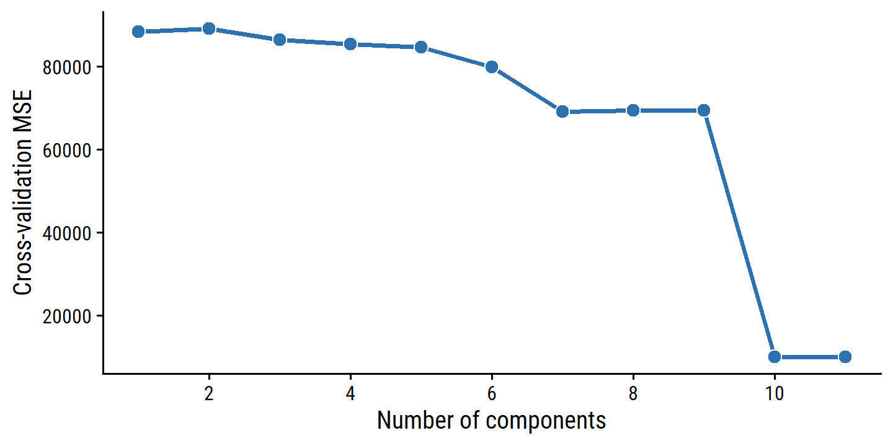
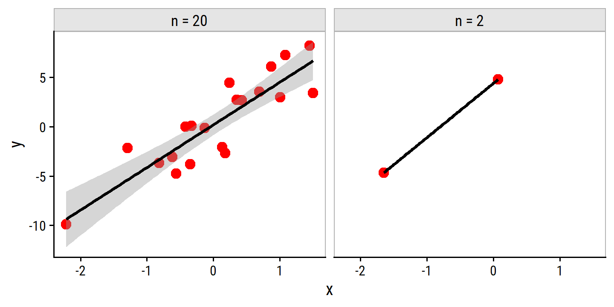
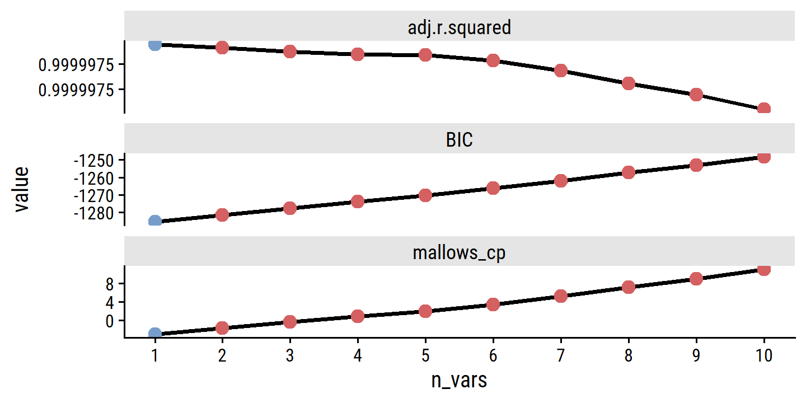
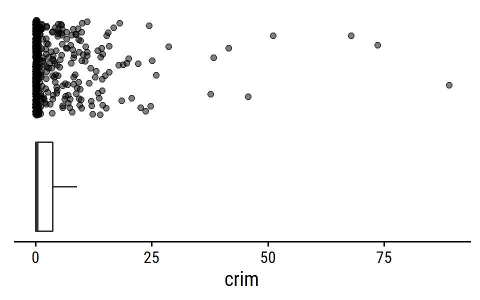

6 Linear Model Selection and Regularization
Load the packages used in this chapter:
library(tidyverse)
library(tidymodels)
library(broom)
library(gt)
library(patchwork)
library(tictoc)
# Load my R package and set the ggplot theme
library(dunnr)
extrafont::loadfonts(device = "win", quiet = TRUE)
theme_set(theme_td())
set_geom_fonts()
set_palette()Before discussing non-linear models in Chapters 7, 8 and 10, this chapter discusses some ways in which the simple linear model can be improved by replacing the familiar least squares fitting with some alternative fitting procedures. These alternatives can sometimes yield better prediction accuracy and model interpretability.
Prediction Accuracy: Provided that the true relationship between the response and the predictors is approximately linear, the least squares estimates will have low bias. If \(n >> p\)—that is, if \(n\), the number of observations, is much larger than \(p\), the number of variables—then the least squares estimates tend to also have low variance, and hence will perform well on test observations. However, if \(n\) is not much larger than \(p\), then there can be a lot of variability in the least squares fit, resulting in overfitting and consequently poor predictions on future observations not used in model training. And if \(p > n\), then there is no longer a unique least squares coefficient estimate: the variance is infinite so the method cannot be used at all. By constraining or shrinking the estimated coefficients, we can often substantially reduce the variance at the cost of a negligible increase in bias. This can lead to substantial improvements in the accuracy with which we can predict the response for observations not used in model training.
Model Interpretability: It is often the case that some or many of the variables used in a multiple regression model are in fact not associated with the response. Including such irrelevant variables leads to unnecessary complexity in the resulting model. By removing these variables—that is, by setting the corresponding coefficient estimates to zero—we can obtain a model that is more easily interpreted. Now least squares is extremely unlikely to yield any coefficient estimates that are exactly zero. In this chapter, we see some approaches for au- tomatically performing feature selection or variable selection—that is, feature for excluding irrelevant variables from a multiple regression model.
In this chapter, we discuss three important classes of methods:
Subset Selection. This approach involves identifying a subset of the \(p\) predictors that we believe to be related to the response. We then fit a model using least squares on the reduced set of variables.
Shrinkage. This approach involves fitting a model involving all \(p\) predictors. However, the estimated coefficients are shrunken towards zero relative to the least squares estimates. This shrinkage (also known as regularization) has the effect of reducing variance. Depending on what type of shrinkage is performed, some of the coefficients may be esti- mated to be exactly zero. Hence, shrinkage methods can also perform variable selection.
Dimension Reduction. This approach involves projecting the \(p\) predictors into an \(M\)-dimensional subspace, where \(M < p\). This is achieved by computing \(M\) different linear combinations, or projections, of the variables. Then these \(M\) projections are used as predictors to fit a linear regression model by least squares.
Although this chapter is specifically about extensions to the linear model for regression, the same concepts apply to other methods, such as the classification models in Chapter 4.
6.1 Subset Selection
Disclaimer at the top: as mentioned in section 3.1, there are a lot of reasons to avoid subset and stepwise model selection. Here are some resources on this topic:
- The 2018 paper by Smith (2018).
- A Stack Overflow response.
- Frank Harrell comments.
Regardless, I will still work through the examples in the text as a programming exercise.
However, tidymodels does not have the functionality for subset/stepwise selection, so I will be using alternatives.
6.1.1 Best Subset Selection
To perform best subset selection, we fit \(p\) models that contain exactly one predictor, \({p \choose 2} = p(p-1)/2\) models that contain exactly two predictors, and so on. In total, this involves fitting \(2^p\) models. Then we select the model that is best, usually following these steps
- Let \(\mathcal{M}_0\) denote the null model, which contains no predictors. This model simply predicts the sample mean.
- For \(k = 1, 2, \dots, p\):
- Fit all \({p \choose k}\) models that contain exactly \(k\) predictors.
- Pick the best among these \({p \choose k}\) models, and call it \(\mathcal{M}_k\). Here, best is defined as having the smallest RSS, or equivalently the largest \(R^2\).
- Select a single best model from among \(\mathcal{M}_0, \dots, \mathcal{M}_p\) using cross-validated prediction error \(C_p\) (AIC), BIC, or adjusted \(R^2\).
Step 2 identifies the best model (on the training data) for each subset size, in order to reduce the problem from \(2^p\) to \(p + 1\) possible models. Choosing the single best model from the \(p + 1\) options must be done with care, because the RSS of these models decreases monotonically, and the \(R^2\) increases monotonically, as the number of predictors increases. A model that minimizes these metrics will have a low training error, but not necessarily a low test error, as we saw in Chapter 2 in Figures 2.9-2.11. Therefore, in step 3, we use a cross-validated prediction error \(C_p\), BIC, or adjusted \(R^2\) in order to select the best model.
Figure 6.1 includes many least squares regression models predicting Balance, and fit using a different subsets of 10 predictors.
Load the credit data set:
credit <- ISLR2::Credit
glimpse(credit)## Rows: 400
## Columns: 11
## $ Income <dbl> 14.891, 106.025, 104.593, 148.924, 55.882, 80.180, 20.996, 7~
## $ Limit <dbl> 3606, 6645, 7075, 9504, 4897, 8047, 3388, 7114, 3300, 6819, ~
## $ Rating <dbl> 283, 483, 514, 681, 357, 569, 259, 512, 266, 491, 589, 138, ~
## $ Cards <dbl> 2, 3, 4, 3, 2, 4, 2, 2, 5, 3, 4, 3, 1, 1, 2, 3, 3, 3, 1, 2, ~
## $ Age <dbl> 34, 82, 71, 36, 68, 77, 37, 87, 66, 41, 30, 64, 57, 49, 75, ~
## $ Education <dbl> 11, 15, 11, 11, 16, 10, 12, 9, 13, 19, 14, 16, 7, 9, 13, 15,~
## $ Own <fct> No, Yes, No, Yes, No, No, Yes, No, Yes, Yes, No, No, Yes, No~
## $ Student <fct> No, Yes, No, No, No, No, No, No, No, Yes, No, No, No, No, No~
## $ Married <fct> Yes, Yes, No, No, Yes, No, No, No, No, Yes, Yes, No, Yes, Ye~
## $ Region <fct> South, West, West, West, South, South, East, West, South, Ea~
## $ Balance <dbl> 333, 903, 580, 964, 331, 1151, 203, 872, 279, 1350, 1407, 0,~For \(p = 10\) predictors, there are \(2^{10} = 1024\) possible combinations for models (including the null model, but this example doesn’t include it).
To get every combination, I’ll use the utils::combn() function:
credit_predictors <- names(credit)
credit_predictors <- credit_predictors[credit_predictors != "Balance"]
credit_model_subsets <- tibble(
n_preds = 1:10,
predictors = map(n_preds,
~ utils::combn(credit_predictors, .x, simplify = FALSE))
) %>%
unnest(predictors) %>%
mutate(
model_formula = map(predictors,
~ as.formula(paste("Balance ~", paste(.x, collapse = "+"))))
)
glimpse(credit_model_subsets)## Rows: 1,023
## Columns: 3
## $ n_preds <int> 1, 1, 1, 1, 1, 1, 1, 1, 1, 1, 2, 2, 2, 2, 2, 2, 2, 2, 2,~
## $ predictors <list> "Income", "Limit", "Rating", "Cards", "Age", "Education~
## $ model_formula <list> <Balance ~ Income>, <Balance ~ Limit>, <Balance ~ Ratin~For differing numbers of predictors \(k = 1, 2, \dots, p\), we should have \({p \choose k}\) models:
credit_model_subsets %>%
count(n_preds) %>%
mutate(p_choose_k = choose(10, n_preds))## # A tibble: 10 x 3
## n_preds n p_choose_k
## <int> <int> <dbl>
## 1 1 10 10
## 2 2 45 45
## 3 3 120 120
## 4 4 210 210
## 5 5 252 252
## 6 6 210 210
## 7 7 120 120
## 8 8 45 45
## 9 9 10 10
## 10 10 1 1Fit all of the models and extract RSS and \(R^2\) metrics:
credit_model_subsets <- credit_model_subsets %>%
mutate(
model_fit = map(model_formula, ~ lm(.x, data = credit)),
RSS = map_dbl(model_fit, ~ sum(.x$residuals^2)),
R2 = map_dbl(model_fit, ~ summary(.x)$r.squared),
# Because of one of the categorical variables (Region) having three levels,
# some models will have +1 dummy variable predictor, which I can calculate
# from the number of coefficients returned from the fit
n_preds_adj = map_int(model_fit, ~ length(.x$coefficients) - 1L)
)Figure 6.1:
credit_model_subsets %>%
pivot_longer(cols = c(RSS, R2), names_to = "metric", values_to = "value") %>%
mutate(metric = factor(metric, levels = c("RSS", "R2"))) %>%
group_by(n_preds_adj, metric) %>%
mutate(
# The "best" model has the lowest value by RSS...
best_model = (metric == "RSS" & value == min(value)) |
# ... and the highest value by R2
(metric == "R2" & value == max(value))
) %>%
ungroup() %>%
ggplot(aes(x = n_preds_adj, y = value)) +
geom_line(data = . %>% filter(best_model), color = "red", size = 1) +
geom_jitter(width = 0.05, height = 0, alpha = 0.3,
color = td_colors$nice$opera_mauve) +
facet_wrap(~ metric, ncol = 2, scales = "free_y") +
scale_x_continuous("Number of predictors", breaks = seq(2, 10, 2))
As expected, the values are monotonically decreasing (RSS) and increasing (\(R^2\)) with number of predictors. There is little improvement past 3 predictors, however.
Although we have presented best subset selection here for least squares regression, the same ideas apply to other types of models, such as logistic regression. In the case of logistic regression, instead of ordering models by RSS in Step 2 of Algorithm 6.1, we instead use the deviance, a measure that plays the role of RSS for a broader class of models. The deviance is negative two times the maximized log-likelihood; the smaller the deviance, the better the fit.
Because it scales as \(2^p\) models, best subset selection can quickly become computationally expensive. The next sections explore computationally efficient alternatives.
6.1.2 Stepwise Selection
Forward Stepwise Selection
Forward stepwise selection begins with a model containing no predictors, and then adds predictors to the model, one-at-a-time, until all predictors are in the model.
- Let \(\mathcal{M}_0\) denote the null model, which contains no predictors.
- For \(k = 0, 1, \dots, p-1\):
- Consider all \(p - k\) models that augment the predictors in \(\mathcal{M}_k\) with one additional predictor.
- Choose the best among these \(p - k\) models, and call it \(\mathcal{M}_{k+1}\). Here, best is defined as having smallest RSS or highest \(R^2\).
- Select a single best model from among \(\mathcal{M}_0, \dots, \mathcal{M}_p\) using cross-validated prediction error \(C_p\) (AIC), BIC, or adjusted \(R^2\).
Step 2 is similar to step 2 in best subset selection, in that we simply choose the model with the lowest RSS or highest \(R^2\). Step 3 is more tricky, and is discussed in Section 6.1.3.
Though much more computationally efficient, it is not guaranteed to find the best possible model (via best subset selection) out of all \(2^p\) possible models.
As a comparison, the example in the text involves performing four forward steps to find the best predictors.
The MASS package has an addTerm() function for taking a single step:
# Model with no predictors
balance_null <- lm(Balance ~ 1, data = credit)
# Model with all predictors
balance_full <- lm(Balance ~ ., data = credit)
MASS::addterm(balance_null, scope = balance_full, sorted = TRUE)## Single term additions
##
## Model:
## Balance ~ 1
## Df Sum of Sq RSS AIC
## Rating 1 62904790 21435122 4359.6
## Limit 1 62624255 21715657 4364.8
## Income 1 18131167 66208745 4810.7
## Student 1 5658372 78681540 4879.8
## Cards 1 630416 83709496 4904.6
## <none> 84339912 4905.6
## Own 1 38892 84301020 4907.4
## Education 1 5481 84334431 4907.5
## Married 1 2715 84337197 4907.5
## Age 1 284 84339628 4907.6
## Region 2 18454 84321458 4909.5Here, the Rating variable offers the best improvement over the null model (by both RSS and AIC).
To run this four times, I’ll use a for loop:
balance_preds <- c("1")
for (forward_step in 1:4) {
balance_formula <- as.formula(
paste("Balance ~", str_replace_all(balance_preds[forward_step], ",", "+"))
)
balance_model <- lm(balance_formula, data = credit)
# Find the next predictor by RSS
new_predictor <- MASS::addterm(balance_model, scope = balance_full) %>%
broom::tidy() %>%
filter(rss == min(rss)) %>%
pull(term)
balance_preds <- append(balance_preds,
paste(balance_preds[forward_step], new_predictor,
sep = ", "))
}
balance_preds## [1] "1" "1, Rating"
## [3] "1, Rating, Income" "1, Rating, Income, Student"
## [5] "1, Rating, Income, Student, Limit"Now re-create Table 6.1:
bind_cols(
credit_model_subsets %>%
filter(n_preds_adj <= 4) %>%
group_by(n_preds_adj) %>%
filter(RSS == min(RSS)) %>%
ungroup() %>%
transmute(
`# variables` = n_preds_adj,
`Best subset` = map_chr(predictors, str_c, collapse = ", ")
),
`Forward stepwise` = balance_preds[2:5] %>% str_remove("1, ")
) %>%
gt(rowname_col = "# variables")| Best subset | Forward stepwise | |
|---|---|---|
| 1 | Rating | Rating |
| 2 | Income, Rating | Rating, Income |
| 3 | Income, Rating, Student | Rating, Income, Student |
| 4 | Income, Limit, Cards, Student | Rating, Income, Student, Limit |
Backward Stepwise Selection
Backwards stepwise selection begins with the full model containing all \(p\) predictors, and then iteratively removes the least useful predictor.
- Let \(\mathcal{M}_p\) denote the full model, which contains all \(p\) predictors.
- For \(k = p, p-1, \dots, 1\):
- Consider all \(k\) models that contain all but one of the predictors in \(\mathcal{M}_k\) for a total of \(k - 1\) predictors.
- Choose the best among these \(k\) models, and call it \(\mathcal{M}_{k-1}\). Here, best is defined as having smallest RSS or highest \(R^2\).
- Select a single best model from among \(\mathcal{M}_0, \dots, \mathcal{M}_p\) using cross-validated prediction error \(C_p\) (AIC), BIC, or adjusted \(R^2\).
Like forward stepwise selection, the backward selection approach searches through only \(1+p(p+1)/2\) models, and so can be applied in settings where \(p\) is too large to apply best subset selection. Also like forward stepwise selection, backward stepwise selection is not guaranteed to yield the best model containing a subset of the \(p\) predictors.
Backward selection requires that the number of samples \(n\) is larger than the number of variables \(p\) (so that the full model can be fit). In contrast, forward stepwise can be used even when \(n < p\), and so is the only viable subset method when \(p\) is very large.
Hybrid Approaches
The best subset, forward stepwise, and backward stepwise selection approaches generally give similar but not identical models. As another alternative, hybrid versions of forward and backward stepwise selection are available, in which variables are added to the model sequentially, in analogy to forward selection. However, after adding each new variable, the method may also remove any variables that no longer provide an improvement in the model fit. Such an approach attempts to more closely mimic best subset selection while retaining the computational advantages of forward and backward stepwise selection.
6.1.3 Choosing the Optimal Model
To apply these subset selection methods, we need to determine which model is best. Since more predictors will always lead to smaller RSS and larger \(R^2\) (training error), we need to estimate the test error. There are two common approaches:
- We can indirectly estimate test error by making an adjustment to the training error to account for the bias due to overfitting.
- We can directly estimate the test error, using either a validation set approach or a cross-validation approach, as discussed in Chapter 5.
\(C_p\), AIC, BIC, and Adjusted \(R^2\)
These techniques involve adjusting the training error to select among a set a models with different numbers of variables.
For a fitted least squares model containg \(d\) predictors, the \(C_p\) estimate of test MSE is computed as:
\[ C_p = \frac{1}{n} (\text{RSS} + 2d \hat{\sigma}^2), \]
where \(\hat{\sigma}^2\) is an estimate of the variance of the error \(\epsilon\) associated with each response measurement. Typically, this is estimated using the full model containing all predictors.
Essentially, the \(C_p\) statistic adds a penalty of \(2d\hat{\sigma}^2\) to the training RSS in order to adjust for the fact that the training error tends to underestimate the test error. Clearly, the penalty increases as the number of predictors in the model increases; this is intended to adjust for the corresponding decrease in training RSS. Though it is beyond the scope of this book, one can show that if \(\hat{\sigma}^2\) is an unbiased estimate of \(\sigma^2\) in (6.2), then \(C_p\) is an unbiased estimate of test MSE. As a consequence, the \(C_p\) statistic tends to take on a small value for models with a low test error, so when determining which of a set of models is best, we choose the model with the lowest \(C_p\) value.
Compute \(\hat{\sigma}\) and \(C_p\) for the best model at the different numbers of predictors:
# Get the estimated variance of the error for calculating C_p
sigma_hat <- summary(balance_full)$sigma
credit_model_best <- credit_model_subsets %>%
group_by(n_preds_adj) %>%
filter(RSS == min(RSS)) %>%
ungroup() %>%
mutate(
`C_p` = (1 / nrow(credit)) * (RSS + 2 * n_preds_adj * sigma_hat^2)
)The AIC criterion is defined for a large class of models fit by maximum likelihood. In the case of the model (6.1) with Gaussian errors, maximum likelihood and least squares are the same thing. In this case AIC is given by
\[ \text{AIC} = \frac{1}{n} (\text{RSS} + 2 d \hat{\sigma}^2), \]
where, for simplicity, we have omitted irrelevant constants. Hence for least squares models, \(C_p\) and AIC are proportional to each other, and so only \(C_p\) is displayed in Figure 6.2.
BIC is derived from a Bayesian point of view, and looks similar to the AIC/\(C_p\):
\[ \text{BIC} = \frac{1}{n} (\text{RSS} + \log (n) d \hat{\sigma}^2), \]
where irrelevant constants were excluded. Here, the factor of 2 in the AIC/\(C_p\) is replaced with \(\log (n)\). Since \(\log n > 2\) for any \(n > 7\), the BIC statistic generally penalizes models with many variables more heavily.
credit_model_best <- credit_model_best %>%
mutate(
BIC = (1 / nrow(credit)) *
(RSS + log(nrow(credit)) * n_preds_adj * sigma_hat^2)
)Recall that the usual \(R^2\) is defined as 1 - RSS/TSS, where TSS = \(\sum (y_i - \bar{y})^2\) is the total sum of squares for the response. The adjusted \(R^2\) statistic is calculated as
\[ \text{Adjusted } R^2 = 1 - \frac{\text{RSS}/(n - d - 1)}{\text{TSS}/(n - 1)} \]
Unlike \(C_p\), AIC, and BIC, for which a smaller value indicates a lower test error, a larger value of adjusted \(R^2\) indicates smaller test error.
The intuition behind the adjusted \(R^2\) is that once all of the correct variables have been included in the model, adding additional noise variables will lead to only a very small decrease in RSS. Since adding noise variables leads to an increase in \(d\), such variables will lead to an increase in \(\text{RSS}/(n−d−1)\), and consequently a decrease in the adjusted \(R^2\). Therefore, in theory, the model with the largest adjusted \(R^2\) will have only correct variables and no noise variables. Unlike the \(R^2\) statistic, the adjusted \(R^2\) statistic pays a price for the inclusion of unnecessary variables in the model.
A model’s \(R^2\) value can be obtained directly from the lm object, so I don’t need to manually compute it:
credit_model_best <- credit_model_best %>%
mutate(
`Adjusted R2` = map_dbl(model_fit, ~ summary(.x)$adj.r.squared)
)Figure 6.2:
credit_model_best %>%
pivot_longer(cols = c("C_p", "BIC", "Adjusted R2"),
names_to = "metric", values_to = "value") %>%
group_by(metric) %>%
mutate(
best_model = ifelse(metric == "Adjusted R2",
value == max(value),
value == min(value))
) %>%
ungroup() %>%
mutate(metric = factor(metric, levels = c("C_p", "BIC", "Adjusted R2"))) %>%
filter(n_preds_adj >= 2) %>%
ggplot(aes(x = n_preds_adj, y = value)) +
geom_point(color = td_colors$nice$spanish_blue) +
geom_line(color = td_colors$nice$opera_mauve) +
geom_point(data = . %>% filter(best_model), size = 5, shape = 4,
color = td_colors$nice$spanish_blue) +
facet_wrap(~ metric, nrow = 1, scales = "free_y") +
scale_x_continuous("Number of predictors", breaks = seq(2, 10, 2))
\(C_p\), AIC, and BIC all have rigorous theoretical justifications that are beyond the scope of this book. These justifications rely on asymptotic arguments (scenarios where the sample size \(n\) is very large). Despite its popularity, and even though it is quite intuitive, the adjusted \(R^2\) is not as well motivated in statistical theory as AIC, BIC, and \(C_p\). All of these measures are simple to use and compute. Here we have presented their formulas in the case of a linear model fit using least squares; however, AIC and BIC can also be defined for more general types of models.
Validation and Cross-validation
Validation and cross-validation from Chapter 5 provide an advantage over AIC, BIC, \(C_p\) and adjusted \(R^2\), in that they provide a direct estimate of the test error, and make fewer assumptions about the true underlying model. It can also be used in a wider ranger of model selection tasks, including scenarios where the model degrees of freedom (e.g. the number of predictors) or error variance \(\sigma^2\) are hard to estimate.
To re-create Figure 6.3, I’ll use the tidymodels approach with rsample to make the validation set and cross-validation splits:
set.seed(499)
tic()
credit_model_best <- credit_model_best %>%
mutate(
validation_set_error = map(
model_formula,
function(model_formula) {
workflow() %>%
add_model(linear_reg()) %>%
add_recipe(recipe(model_formula, credit)) %>%
fit_resamples(validation_split(credit, prop = 0.75)) %>%
collect_metrics() %>%
filter(.metric == "rmse") %>%
select(`Validation set error` = mean, validation_std_err = std_err)
}
),
cross_validation_error = map(
model_formula,
function(model_formula) {
workflow() %>%
add_model(linear_reg()) %>%
add_recipe(recipe(model_formula, credit)) %>%
fit_resamples(vfold_cv(credit, v = 10)) %>%
collect_metrics() %>%
filter(.metric == "rmse") %>%
select(`Cross-validation error` = mean, cv_std_err = std_err)
}
),
`Square root of BIC` = sqrt(BIC)
) %>%
unnest(c(validation_set_error, cross_validation_error))
toc()## 13.95 sec elapsedcredit_model_best %>%
pivot_longer(cols = c("Validation set error", "Cross-validation error",
"Square root of BIC"),
names_to = "metric", values_to = "value") %>%
group_by(metric) %>%
mutate(best_model = value == min(value)) %>%
ungroup() %>%
mutate(
metric = factor(metric,
levels = c("Square root of BIC", "Validation set error",
"Cross-validation error"))
) %>%
ggplot(aes(x = n_preds_adj, y = value)) +
geom_point(color = td_colors$nice$spanish_blue) +
geom_line(color = td_colors$nice$opera_mauve) +
geom_point(data = . %>% filter(best_model), size = 5, shape = 4,
color = td_colors$nice$spanish_blue) +
facet_wrap(~ metric, nrow = 1, scales = "free_y") +
scale_x_continuous("Number of predictors", breaks = seq(2, 10, 2))Because the randomness associated with splitting the data in the validation set and cross-validation approaches, we will likely find a different best model with different splits. In this case, we can select a model using the one-standard-error rule, where we calculate the standard error of the test MSE for each model, and then select the smallest model for which the estimated test error is within one standard error of the lowest test error.
credit_model_best %>%
transmute(
`# predictors` = n_preds_adj, `Cross-validation error`, cv_std_err,
lowest_error = min(`Cross-validation error`),
lowest_std_error = cv_std_err[`Cross-validation error` == lowest_error],
# The best model is the minimum `n_preds_adj` (number of predictors) for
# which the CV test error is within the standard error of the lowest error
best_model = n_preds_adj == min(n_preds_adj[`Cross-validation error` < lowest_error + lowest_std_error])
) %>%
gt() %>%
tab_style(style = cell_text(weight = "bold"),
locations = cells_body(rows = best_model))| # predictors | Cross-validation error | cv_std_err | lowest_error | lowest_std_error | best_model |
|---|---|---|---|---|---|
| 1 | 230.43401 | 12.663270 | 98.69851 | 3.405358 | FALSE |
| 2 | 161.43387 | 8.886096 | 98.69851 | 3.405358 | FALSE |
| 3 | 103.70715 | 2.457797 | 98.69851 | 3.405358 | FALSE |
| 4 | 99.24797 | 4.544705 | 98.69851 | 3.405358 | TRUE |
| 5 | 99.34556 | 3.231063 | 98.69851 | 3.405358 | FALSE |
| 6 | 99.01851 | 4.147442 | 98.69851 | 3.405358 | FALSE |
| 7 | 98.69851 | 3.405358 | 98.69851 | 3.405358 | FALSE |
| 8 | 99.65805 | 2.937664 | 98.69851 | 3.405358 | FALSE |
| 9 | 99.63657 | 4.109147 | 98.69851 | 3.405358 | FALSE |
| 10 | 99.67476 | 3.288357 | 98.69851 | 3.405358 | FALSE |
| 11 | 99.95464 | 3.082506 | 98.69851 | 3.405358 | FALSE |
The rationale here is that if a set of models appear to be more or less equally good, then we might as well choose the simplest model—that is, the model with the smallest number of predictors. In this case, applying the one-standard-error rule to the validation set or cross-validation approach leads to selection of the three-variable model.
Here, the four-variable model was selected, not the three-variable model like in the text, but I would chalk that up to the random sampling.
6.2 Shrinkage Methods
As already discussed, subset selection has a lot of issues. A much better alternative is use a technique that contrains or regularizes or shrinks the coefficient estimates towards zero in a model fit with all \(p\) predictors. It turns out that shrinking the coefficient estimates can significantly reduce the variance.
6.2.1 Ridge Regression
Recall from Chapter 3 that the least squares fitting procedure involves estimating \(\beta_0, \beta_1, \dots, \beta_p\) by minimizing the RSS:
\[ \text{RSS} = \sum_{i=1}^n \left(y_i - \hat{y}_i \right)^2 = \sum_{i=1}^n \left(y_i - \beta_0 - \sum_{j=1}^p \beta_j x_{ij} \right)^2. \]
Ridge regression is very similar to least squares, except the quantity minimized is slightly different:
\[ \sum_{i=1}^n \left(y_i - \beta_0 - \sum_{j=1}^p \beta_j x_{ij} \right)^2 + \lambda \sum_{j=1}^p \beta_j^2 = \text{RSS} + \lambda \sum_{j=1}^p \beta_j^2, \]
where \(\lambda \geq 0\) is a tuning parameter, to be determined separately. The second term above, called a shrinkage penalty is small when the coefficients are close to zero, and so has the effect of shrinking the estimates \(\beta_j\) towards zero. The tuning parameter \(\lambda\) serves to control the relative impact of these two terms on the regression coefficient estimates. When \(\lambda = 0\), the penalty term has no effect, and ridge regression will produce the same least squares estimates. Unlike least squares, which generates only one set of coefficient estimates (the “best fit”), ridge regression will produce a different set of coefficient estimates \(\hat{\beta}_{\lambda}^R\) for each value \(\lambda\). Selecting a good value for \(\lambda\) is critical.
Note that the shrinkage penalty is not applied to the intercept \(\beta_0\), which is simply a measure of the mean value of the response when all predictors are zero (\(x_{i1} = x_{i2} = \dots = 0\))
An Application to the Credit Data
In tidymodels, regularized least squares is done with the glmnet engine.
(See this article for a list of models available in parnsip and this article for examples using glmnet.)
Specify the model:
ridge_spec <- linear_reg(penalty = 0, mixture = 0) %>%
set_engine("glmnet")
# The `parnship::translate()` function is a helpful way to "decode" a model spec
ridge_spec %>% translate()## Linear Regression Model Specification (regression)
##
## Main Arguments:
## penalty = 0
## mixture = 0
##
## Computational engine: glmnet
##
## Model fit template:
## glmnet::glmnet(x = missing_arg(), y = missing_arg(), weights = missing_arg(),
## alpha = 0, family = "gaussian")The penalty argument above refers to the \(\lambda\) tuning parameter.
The mixture variable ranges from 0 to 1, with 0 corresponding to ridge regression, 1 corresponding to lasso regression, and values between using a mixture of both.
Fit Balance to all the predictors:
credit_ridge_fit <- fit(ridge_spec, Balance ~ ., data = credit)
tidy(credit_ridge_fit)## # A tibble: 12 x 3
## term estimate penalty
## <chr> <dbl> <dbl>
## 1 (Intercept) -401. 0
## 2 Income -5.18 0
## 3 Limit 0.114 0
## 4 Rating 1.66 0
## 5 Cards 15.8 0
## 6 Age -0.957 0
## 7 Education -0.474 0
## 8 OwnYes -4.86 0
## 9 StudentYes 382. 0
## 10 MarriedYes -12.1 0
## 11 RegionSouth 9.11 0
## 12 RegionWest 13.1 0Because our ridge_spec had penalty = 0, the coefficients here correspond to no penalty, but the glmnet::glmnet() function fits a range of penalty values all at once, which we can extract with broom::tidy like so:
tidy(credit_ridge_fit, penalty = 100)## # A tibble: 12 x 3
## term estimate penalty
## <chr> <dbl> <dbl>
## 1 (Intercept) -307. 100
## 2 Income -3.04 100
## 3 Limit 0.0951 100
## 4 Rating 1.40 100
## 5 Cards 16.4 100
## 6 Age -1.10 100
## 7 Education -0.178 100
## 8 OwnYes -0.341 100
## 9 StudentYes 335. 100
## 10 MarriedYes -12.4 100
## 11 RegionSouth 7.45 100
## 12 RegionWest 8.79 100To re-create Figure 6.4, I’ll first re-fit the data on standardized data (continuous variables re-scaled to have mean of 0, standard deviation of 1):
credit_recipe <- recipe(Balance ~ ., data = credit) %>%
step_dummy(all_nominal_predictors()) %>%
step_normalize(all_predictors())
credit_ridge_workflow <- workflow() %>%
add_recipe(credit_recipe) %>%
add_model(ridge_spec)
credit_ridge_fit <- fit(credit_ridge_workflow, data = credit)Then I’ll compile coefficient estimates for a wide range of \(\lambda\) values with purrr::map_dfr():
map_dfr(seq(-2, 5, 0.1),
~ tidy(credit_ridge_fit, penalty = 10^.x)) %>%
filter(term != "(Intercept)") %>%
mutate(
term_highlight = fct_other(
term, keep = c("Income", "Limit", "Rating", "Student_Yes")
)
) %>%
ggplot(aes(x = penalty, y = estimate)) +
geom_line(aes(group = term, color = term_highlight), size = 1) +
scale_x_log10(breaks = 10^c(-2, 0, 2, 4)) +
geom_vline(xintercept = 40, lty = 2, size = 1) +
labs(x = expression(lambda), y = "Standardized coefficients", color = NULL) +
scale_color_manual(values = c(td_colors$pastel6[1:4], "grey80")) +
theme(legend.position = c(0.8, 0.8))From this figure, it is clear that the fitting procedure is truncated at a penalty values of \(\lambda\) = 40 (the vertical line above).
This has to do with the regularization path chosen by glmnet.
We can see from the grid of values for \(\lambda\) that the minimum value is 40:
extract_fit_engine(credit_ridge_fit)$lambda## [1] 396562.69957 361333.16232 329233.32005 299985.13930 273335.28632
## [6] 249052.93283 226927.75669 206768.12023 188399.41030 171662.52594
## [11] 156412.50026 142517.24483 129856.40559 118320.32042 107809.06926
## [16] 98231.60868 89504.98330 81553.60727 74308.60957 67707.23750
## [21] 61692.31313 56211.73806 51218.04218 46667.97247 42522.11842
## [26] 38744.57062 35302.60975 32166.42320 29308.84681 26705.12964
## [31] 24332.71953 22171.06779 20201.45123 18406.80998 16771.59971
## [36] 15281.65702 13924.07673 12687.10013 11560.01312 10533.05342
## [41] 9597.32598 8744.72599 7967.86864 7260.02515 6615.06452
## [46] 6027.40042 5491.94278 5004.05372 4559.50738 4154.45331
## [51] 3785.38313 3449.10012 3142.69158 2863.50352 2609.11776
## [56] 2377.33093 2166.13540 1973.70190 1798.36366 1638.60199
## [61] 1493.03311 1360.39616 1239.54232 1129.42479 1029.08981
## [66] 937.66830 854.36844 778.46870 709.31169 646.29839
## [71] 588.88302 536.56828 488.90103 445.46841 405.89423
## [76] 369.83570 336.98052 307.04410 279.76714 254.91340
## [81] 232.26760 211.63359 192.83264 175.70192 160.09305
## [86] 145.87082 132.91206 121.10452 110.34593 100.54310
## [91] 91.61113 83.47265 76.05717 69.30046 63.14400
## [96] 57.53446 52.42326 47.76612 43.52271 39.65627The regularization path can be set manually using the path_values argument (see this article for more details):
coef_path_values <- 10^seq(-2, 5, 0.1)
ridge_spec_path <- linear_reg(penalty = 0, mixture = 0) %>%
set_engine("glmnet", path_values = coef_path_values)
credit_ridge_workflow_path <- workflow() %>%
add_recipe(credit_recipe) %>%
add_model(ridge_spec_path)
credit_ridge_fit <- fit(credit_ridge_workflow_path, data = credit)Now with the full range of \(\lambda\) values, I can re-create the figure properly:
# Compute the l2 norm for the least squares model
credit_lm_fit <- lm(Balance ~ ., data = credit)
credit_lm_fit_l2_norm <- sum(credit_lm_fit$coefficients[-1]^2)
d <- map_dfr(seq(-2, 5, 0.1),
~ tidy(credit_ridge_fit, penalty = 10^.x)) %>%
filter(term != "(Intercept)") %>%
group_by(penalty) %>%
mutate(l2_norm = sum(estimate^2),
l2_norm_ratio = l2_norm / credit_lm_fit_l2_norm) %>%
ungroup() %>%
mutate(
term_highlight = fct_other(
term, keep = c("Income", "Limit", "Rating", "Student_Yes")
)
)
p1 <- d %>%
ggplot(aes(x = penalty, y = estimate)) +
geom_line(aes(group = term, color = term_highlight), size = 1) +
scale_x_log10(breaks = 10^c(-2, 0, 2, 4)) +
labs(x = expression(lambda), y = "Standardized coefficients", color = NULL) +
scale_color_manual(values = c(td_colors$pastel6[1:4], "grey80")) +
theme(legend.position = c(0.7, 0.8))
p2 <- d %>%
ggplot(aes(x = l2_norm_ratio, y = estimate)) +
geom_line(aes(group = term, color = term_highlight), size = 1) +
labs(
x = expression(paste("||", hat(beta[lambda]), "||2 / ||", hat(beta), "||2")),
y = NULL, color = NULL
) +
scale_color_manual(values = c(td_colors$pastel6[1:4], "grey80")) +
theme(legend.position = "none")
p1 | p2On the subject of standardizing predictors:
The standard least squares coefficient estimates discussed in Chapter 3 are scale equivariant: multiplying \(X_j\) by a constant \(c\) simply leads to a scaling of the least squares coefficient estimates by a factor of \(1/c\). In other words, regardless of how the \(j\)th predictor is scaled, \(X_j \hat{\beta}_j\) will remain the same. In contrast, the ridge regression coefficient estimates can change substantially when multiplying a given predictor by a constant. For instance, consider the income variable, which is measured in dollars. One could reasonably have measured income in thousands of dollars, which would result in a reduction in the observed values of income by a factor of 1,000. Now due to the sum of squared coefficients term in the ridge regression formulation (6.5), such a change in scale will not simply cause the ridge regression coefficient estimate for income to change by a factor of 1,000. In other words, \(X_j \hat{\beta}^R_{j,λ}\) will depend not only on the value of \(\lambda\), but also on the scaling of the \(j\)th predictor. In fact, the value of \(X_j \hat{\beta}^R_{j, \lambda}\) may even depend on the scaling of the other predictors! Therefore, it is best to apply ridge regression after standardizing the predictors, … so that they are all on the same scale.
Why Does Ridge Regression Improve Over Least Squares?
Ridge regression’s advantage over least squares has to do with the bias-variance trade-off. As \(\lambda\) increases, the flexibility of the fit decreases, leading to decreased variance but increased bias. So ridge regression works best in situations where the least squares estimates have high variance, like when the number of variables \(p\) is almost as large as the number of observations \(n\) (as in Figure 6.5).
Ridge regression also has substantial computational advantages over best subset selection, which requires searching through \(2p\) models. As we discussed previously, even for moderate values of \(p\), such a search can be computationally infeasible. In contrast, for any fixed value of \(\lambda\), ridge regression only fits a single model, and the model-fitting procedure can be performed quite quickly. In fact, one can show that the computations required to solve (6.5), simultaneously for all values of \(\lambda\), are almost identical to those for fitting a model using least squares.
6.2.2 The Lasso
Ridge regression will shrink all coefficients towards zero, but will not set them to exactly zero (unless \(\lambda = \infty\)). This doesn’t affect prediction accuracy, but may cause challenges in model interpretation for large numbers of variables \(p\).
The lasso is a relatively recent alternative to ridge regression with a similar formulation as ridge regression. The coefficients \(\hat{\beta}_{\lambda}^L\) minimize the quantity:
\[ \sum_{i=1}^n \left(y_i - \beta_0 - \sum_{j=1}^p \beta_j x_{ij} \right)^2 + \lambda \sum_{j=1}^p | \beta_j | = \text{RSS} + \lambda \sum_{j=1}^p | \beta_j |. \]
The only difference is that the \(\beta_j^2\) term in the ridge regression penalty (6.5) has been replaced by \(|\beta_j|\) in the lasso penalty (6.7). In statistical parlance, the lasso uses an \(\mathcal{l}_1\) (pronounced “ell 1”) penalty instead of an \(\mathcal{l}_2\) penalty. The \(\mathcal{l}_1\) norm of a coefficient vector \(\beta\) is given by \(||\beta||_1 = \sum |\beta_j|\).
The \(\mathcal{l}_1\) penalty has the effect of forcing some of the coefficient estimates to be exactly equal to zero for sufficiently large \(\lambda\). Functionally, this is a form of automatic variable selection like the best subset techniques. We say that the lasso yields sparse models which only involve a subset of the variables. This makes lasso models much easier to interpret than those produced by ridge regression.
Fit the credit model with lasso regression:
credit_recipe <- recipe(Balance ~ ., data = credit) %>%
step_dummy(all_nominal_predictors()) %>%
step_normalize(all_predictors())lasso_spec <- linear_reg(penalty = 20, mixture = 1) %>%
set_engine("glmnet")
credit_lasso_workflow <- workflow() %>%
add_recipe(credit_recipe) %>%
add_model(lasso_spec)
credit_lasso_fit <- fit(credit_lasso_workflow, data = credit)# Compute the l1 norm for the least squares model
credit_lm_fit_l1_norm <- sum(abs(credit_lm_fit$coefficients[-1]))
d <- map_dfr(seq(-1, 3, 0.1),
~ tidy(credit_lasso_fit, penalty = 10^.x)) %>%
filter(term != "(Intercept)") %>%
group_by(penalty) %>%
mutate(l1_norm = sum(abs(estimate)),
l1_norm_ratio = l1_norm / credit_lm_fit_l1_norm) %>%
ungroup() %>%
mutate(
term_highlight = fct_other(
term, keep = c("Income", "Limit", "Rating", "Student_Yes")
)
)
p1 <- d %>%
ggplot(aes(x = penalty, y = estimate)) +
geom_line(aes(group = term, color = term_highlight), size = 1) +
scale_x_log10() +
labs(x = expression(lambda), y = "Standardized coefficients", color = NULL) +
scale_color_manual(values = c(td_colors$pastel6[1:4], "grey80")) +
theme(legend.position = c(0.7, 0.2))
p2 <- d %>%
ggplot(aes(x = l1_norm_ratio, y = estimate)) +
geom_line(aes(group = term, color = term_highlight), size = 1) +
labs(
x = expression(paste("||", hat(beta[lambda]), "||1 / ||", hat(beta), "||1")),
y = NULL, color = NULL
) +
scale_color_manual(values = c(td_colors$pastel6[1:4], "grey80")) +
theme(legend.position = "none")
p1 | p2The shapes of the curves are right, but the scale of the \(\lambda\) parameter in the left panel and the ratio in the right panel are much different from the text – not sure what happened there.
Another Formulation for Ridge Regression and the Lasso
One can show that the lasso and ridge regression coefficient estimates solve the problems:
\[ \begin{align} &\text{minimize } \beta \left[ \sum_{i=1}^n \left(y_i - \beta_0 - \sum_{j=1}^p \beta_j x_{ij} \right)^2 \right] \text{ subject to } \sum_{j=1}^p |\beta_j| \leq s \\ &\text{minimize } \beta \left[ \sum_{i=1}^n \left(y_i - \beta_0 - \sum_{j=1}^p \beta_j x_{ij} \right)^2 \right] \text{ subject to } \sum_{j=1}^p \beta_j^2 \leq s, \end{align} \]
respectively. In other words, for every value of \(\lambda\), there is some \(s\) associated with the lasso/ridge coefficient estimates. For \(p = 2\), then the lasso coefficient estimates have the smallest RSS out of all points that lie within the diamond defined by \(|\beta_1| + |\beta_2| \leq s\); likewise, the circle \(\beta_1^2 + \beta_2^2 \leq s\) for ridge regression.
This formulation with \(s\) can be though of in terms of a budget of coefficient size:
When we perform the lasso we are trying to find the set of coefficient estimates that lead to the smallest RSS, subject to the constraint that there is a budget \(s\) for how large \(\sum_{j=1}^p |\beta_j|\) can be. When \(s\) is extremely large, then this budget is not very restrictive, and so the coefficient estimates can be large. In fact, if \(s\) is large enough that the least squares solution falls within the budget, then (6.8) will simply yield the least squares solution. In contrast, if \(s\) is small, then \(\sum_{j=1}^p |\beta_j|\) must be small in order to avoid violating the budget. Similarly, (6.9) indicates that when we perform ridge regression, we seek a set of coefficient estimates such that the RSS is as small as possible, subject to the requirement that \(\sum^p_{j=1} \beta_j^2\) does not exceed the budget \(s\).
This formulation also allows us to see the close connection between lasso, ridge and best subset selection. Best subset selection is the minimization problem:
\[ \text{minimize } \beta \left[ \sum_{i=1}^n \left(y_i - \beta_0 - \sum_{j=1}^p \beta_j x_{ij} \right)^2 \right] \text{ subject to } \sum_{j=1}^p I(\beta_j \neq 0) \leq s. \]
The Variable Selection Property of the Lasso
To understand why the lasso can remove predictors by shrinking coefficients to exactly zero, we can think of the shapes of the constraint functions, and the contours of RSS around the least squares estimate (see Figure 6.7 in the book for a visualization). For \(p = 2\), this is a circle (\(\beta_1^2 + \beta_2^2 \leq s\)) for ridge, and square (\(|\beta_1| + |\beta_2| \leq s\)) for lasso regression.
Each of the ellipses centered around \(\hat{\beta}\) represents a contour: this means that all of the points on a particular ellipse have the same RSS value. As the ellipses expand away from the least squares coefficient estimates, the RSS increases. Equations (6.8) and (6.9) indicate that the lasso and ridge regression coefficient estimates are given by the first point at which an ellipse contacts the constraint region. Since ridge regression has a circular constraint with no sharp points, this intersection will not generally occur on an axis, and so the ridge regression coefficient estimates will be exclusively non-zero. However, the lasso constraint has corners at each of the axes, and so the ellipse will often intersect the constraint region at an axis. When this occurs, one of the coefficients will equal zero. In higher dimensions, many of the coefficient estimates may equal zero simultaneously. In Figure 6.7, the intersection occurs at \(\beta_1 = 0\), and so the resulting model will only include \(\beta_2\).
This key idea holds for large dimension \(p > 2\) – the lasso constraint will always have sharp corners, and the ridge constraint will not.
Comparing the Lasso and Ridge Regression
Generally, the lasso leads to qualitatively similar behavior to ridge regression, in that a larger \(\lambda\) increases bias and decreases variance. A helpful way to compare models with different types of regularization is to plot \(R^2\) as in Figure 6.8 comparing lasso and ridge MSE. In this example, the results are almost identical, with a slight edge to the ridge regression due to lower variance. This advantage is due to the fact that the simulated data consisted of 45 predictors, that were all related to the response – that is, none of the true coefficients equaled zero. Lasso implicitly assumes that a number of the coefficients are truly zero, so it is not surprising it performs slightly worse on this example. By contrast, the example in Figure 6.9 was simulated so that only 2 out of 45 predictors were related to the response. In this case, the lasso tends to outperform ridge regression in terms of bias, variance and MSE.
These two examples illustrate that neither ridge regression nor the lasso will universally dominate the other. In general, one might expect the lasso to perform better in a setting where a relatively small number of predictors have substantial coefficients, and the remaining predictors have coefficients that are very small or that equal zero. Ridge regression will perform better when the response is a function of many predictors, all with coefficients of roughly equal size. However, the number of predictors that is related to the response is never known a priori for real data sets. A technique such as cross-validation can be used in order to determine which approach is better on a particular data set.
As with ridge regression, when the least squares estimates have excessively high variance, the lasso solution can yield a reduction in variance at the expense of a small increase in bias, and consequently can gener- ate more accurate predictions. Unlike ridge regression, the lasso performs variable selection, and hence results in models that are easier to interpret.
There are very efficient algorithms for fitting both ridge and lasso models; in both cases the entire coefficient paths can be computed with about the same amount of work as a single least squares fit.
A Simple Special Case for Ridge Regression and the Lasso
Consider a simple case with \(n = p\) and a diagonal matrix \(\bf{X}\) with 1’s on the diagonal and 0’s in all off-diagonal elements. To simplify further, assume that we are performing regression without an intercept. Then the usual least squares problem involves minimizing:
\[ \sum_{j=1}^p (y_j - \beta_j)^2. \]
Which has the solution \(\hat{\beta}_j = y_j\). In ridge and lasso regression, the following are minimized:
\[ \begin{align} &\sum_{j=1}^p (y_j - \beta_j)^2 + \lambda \sum_{j=1}^p \beta_j^2 \\ &\sum_{j=1}^p (y_j - \beta_j)^2 + \lambda \sum_{j=1}^p |\beta_j|. \end{align} \]
One can show that the ridge regression estimates take the form
\[ \hat{\beta}_j^R = y_j / (1 + \lambda) \]
and the lasso estimates take the form
\[ \hat{\beta}_j^L = \left\{\begin{array}{lr} y_j - \lambda / 2, &\text{if } y_j > \lambda / 2 \\ y_j + \lambda / 2, &\text{if } y_j < - \lambda / 2 \\ 0, &\text{if } |y_j| \leq \lambda / 2 \end{array}\right. \]
The coefficient estimates are shown in Figure 6.10. The ridge regression estimates are all shrunken towards zero by the same proportion, while the lasso shrinks each coefficient by the same amount and values less than \(\lambda / 2\) are shrunken to exactly zero. This latter type of shrinkage is known as soft-thresholding, and is how lasso performs feature selection.
…ridge regression more or less shrinks every dimension of the data by the same proportion, whereas the lasso more or less shrinks all coefficients toward zero by a similar amount, and sufficiently small coefficients are shrunken all the way to zero.
Bayesian Interpretation for Ridge Regression and the Lasso
A Bayesian viewpoint for regression assumes that the vector of coefficients \(\beta\) has some prior distribution \(p(\beta)\), where \(\beta = (\beta_0, \dots , \beta_p)^T\). The likelihood of the data is then \(f(Y|X,\beta)\). Multiplying the prior by the likelihood gives us (up to a proportionality constant) the posterior distribution from Bayes’ theorem:
\[ p (\beta|X, Y) \propto f(Y|X,\beta) p(\beta|X) = f(Y|X,\beta) p(\beta). \]
If we assume
- the usual linear model \(Y = \beta_0 + X_1 \beta_1 + \dots X_p \beta_p + \epsilon\),
- the errors are independent and drawn from a normal distribution,
- that \(p(\beta) = \Pi_{j=1}^p g(\beta_j)\) for some density function \(g\).
It turns out that ridge and lasso follow naturally from two special cases of \(g\):
- If \(g\) is a Gaussian distribution with mean zero and standard deviation a function of \(\lambda\), then it follow that the posterior mode for \(\beta\) – that is, the most likely value for \(\beta\), given the data – is given by the ridge regression solution. (In fact, the ridge regression solution is also the posterior mean.)
- If \(g\) is a double-exponential (Laplace) distribution with mean zero and scale parameter a function of \(\lambda\), then it follow that the posterior mode for \(\beta\) is the lasso solution. (However, the lasso solution is not the posterior mean, and in fact, the posterior mean does not yield a spare coefficient vector).
The Gaussian and double-exponential priors are displayed in Figure 6.11. Therefore, from a Bayesian viewpoint, ridge regression and the lasso follow directly from assuming the usual linear model with normal errors, together with a simple prior distribution for \(β\). Notice that the lasso prior is steeply peaked at zero, while the Gaussian is flatter and fatter at zero. Hence, the lasso expects a priori that many of the coefficients are (exactly) zero, while ridge assumes the coefficients are randomly distributed about zero.
6.2.3 Selecting the Tuning Parameter
Just like subset selection requires a method to determine which models are best, these regularization methods require a method for selecting a value for the tuning parameter \(\lambda\) (or constraint \(s\)). Cross-validation is the simple way to tackle this. We choose a grid of \(\lambda\) values, and compute CV error for each value of \(\lambda\), and select the value for which error is smallest. The model is then re-fit using all available observations with the selected tuning parameter \(\lambda\).
As explained previously, the tidydmodels framework does not allow fitting by LOOCV.
credit_splits <- vfold_cv(credit, v = 10)Then the recipe (nothing new here):
credit_ridge_recipe <- recipe(Balance ~ ., data = credit) %>%
step_dummy(all_nominal_predictors()) %>%
step_normalize(all_predictors())In the model specification, I set mixture = 0 for ridge regression, and set penalty = tune() to indicate it as a tunable parameter:
ridge_spec <- linear_reg(mixture = 0, penalty = tune()) %>%
set_engine("glmnet")Combine into a workflow:
credit_ridge_workflow <- workflow() %>%
add_recipe(credit_ridge_recipe) %>%
add_model(ridge_spec)
credit_ridge_workflow## == Workflow ====================================================================
## Preprocessor: Recipe
## Model: linear_reg()
##
## -- Preprocessor ----------------------------------------------------------------
## 2 Recipe Steps
##
## * step_dummy()
## * step_normalize()
##
## -- Model -----------------------------------------------------------------------
## Linear Regression Model Specification (regression)
##
## Main Arguments:
## penalty = tune()
## mixture = 0
##
## Computational engine: glmnetLastly, because we are tuning penalty (\(\lambda\)), we need to define a grid of values to try when fitting the model.
The dials package provides many tools for tuning in tidymodels.
grid_regular() creates a grid of evenly spaced points.
As the first argument, I provide a penalty() with argument range that takes minimum and maximum values on a log scale:
penalty_grid <- grid_regular(penalty(range = c(-2, 4)), levels = 10)
penalty_grid## # A tibble: 10 x 1
## penalty
## <dbl>
## 1 0.01
## 2 0.0464
## 3 0.215
## 4 1
## 5 4.64
## 6 21.5
## 7 100
## 8 464.
## 9 2154.
## 10 10000To fit the models using this grid of values, we use tune_grid():
tic()
credit_ridge_tune <- tune_grid(
credit_ridge_workflow,
resamples = credit_splits,
grid = penalty_grid
)
toc()## 2.17 sec elapsedcredit_ridge_tune %>% autoplot()6.3 Dimension Reduction Methods
The methods that we have discussed so far in this chapter have controlled variance in two different ways, either by using a subset of the original variables, or by shrinking their coefficients toward zero. All of these methods are defined using the original predictors, \(X_1, X_2, \dots , X_p\). We now explore a class of approaches that transform the predictors and then fit a least squares model using the transformed variables. We will refer to these techniques as dimension reduction methods.
We represent our original \(p\) predictors \(X_j\) as \(M\) (\(< p\)) linear combinations:
\[ Z_m = \sum_{j=1}^p \phi_{jm} X_j \]
for some constants \(\phi_{1m}, \phi_{2m}, \dots \phi_{pm}\) , \(m = 1, \dots, M\). We can then fit a linear regression model:
\[ y_i = \theta_0 + \sum_{m=1}^M \theta_m z_{im} + \epsilon_i, \ \ \ \ i = 1, \dots, n, \]
using least squares. Note that the regression coefficients here are represented by \(\theta_0, \theta_1, \dots, \theta_M\).
If the constants \(\phi_{1m}, \phi_{2m}, \dots , \phi_{pm}\) are chosen wisely, then such dimension reduction approaches can often outperform least squares regression.
This method is called dimension reduction because it involves reducing the \(p+1\) coefficients \(\beta_0, \dots, \beta_p\) down to \(M + 1\) coefficients \(\theta_0, \dots, \theta_M\) (\(M < p\)).
Notice that the models are numerically equivalent:
\[ \sum_{m=1}^M \theta_m z_{im} = \sum_{m=1}^M \theta_m \sum_{j=1}^p \phi_{jm} x_{ij} = \sum_{j=1}^p \sum_{m=1}^M \theta_m \phi_{jm} x_{ij} = \sum_{j=1}^p \beta_j x_{ij}, \]
where
\[ \beta_j = \sum_{m=1}^M \theta_m \phi_{jm}. \]
Hence, this can be thought of as a special case of the original linear regression model. Dimension reduction serves to constrain the estimated \(\beta_j\) coefficients to the above form, which has the potential to bias the estimates. However, in situations where \(p\) is large relative to \(n\), selecting a value of \(M \ll p\) can significantly reduce the variance of the fitted coefficients.
All dimension reduction methods work in two steps. First, the transformed predictors \(Z_1, Z_2, \dots Z_M\) are obtained. Second, the model is fit using these \(M\) predictors. However, the choice of \(Z_1, Z_2, \dots Z_M\), or equivalently, the selection of the \(\phi_{jm}\)’s, can be achieved in different ways. In this chapter, we will consider two approaches for this task: principal components and partial least squares.
6.3.1 Principal Components Regression
An Overview of Principal Components Analysis
Principal components analysis (PCA) is a technique for reducing the dimension of an \(n \times p\) data matrix \(\textbf{X}\). The first principal component direction of the data is that along which the observations vary the most. If the observations were to be projected onto the line defined by this principal component, then the resulting projected observations would have the largest possible variance. Alternatively: the first principal component defines the line that is as close as possible to the data. The principal component can be summarized mathematically as a linear combination of the variables, \(Z_1\).
The second principal component \(Z_2\) is a linear combination of the variables that is uncorrelated with \(Z_1\), and has the largest variance subject to this constraint. Visually, the direction of this line must be perpendicular or orthogonal to the first principal component.
Up to \(p\) distinct principal components can be constructed, but the first component will contain the most information. Each component successively maximizes variance, subject to the constraint of being uncorrelated with the previous components.
The Principal Components Regression Approach
The principal components regression (PCR) approach involves constructing the first \(M\) principal components, \(Z_1, \dots, Z_M\), and then using these components as the predictors in a linear regression model that is fit using least squares. The key idea is that often a small number of principal components suffice to explain most of the variability in the data, as well as the relationship with the response. In other words, we assume that the directions in which \(X_1, \dots, X_p\) show the most variation are the directions that are associated with \(Y\). While this assumption is not guaranteed to be true, it often turns out to be a reasonable enough approximation to give good results.
If the assumption underlying PCR holds, then fitting a least squares model to \(Z_1,\dots, Z_M\) will lead to better results than fitting a least squares model to \(X_1,\dots,X_p\), since most or all of the information in the data that relates to the response is contained in \(Z_1,\dots,Z_M\), and by estimating only \(M ≪ p\) coefficients we can mitigate overfitting
It is important to note that, although PCR offers a simple way to perform regression using a smaller number of predictors (\(M < p\)), it is not a feature selection method. The \(M\) principal components used in the regression is a linear combination of all \(p\) of the original features. In this sense, PCR is more closely related to ridge regression than the lasso (because the lasso shrinks coefficients to exactly zero, essentially removing them). In fact, ridge regression can be considered a continuous version of PCR.
In tidymodels, principal components are extracted in pre-processing via recipes::step_pca().
Here is the workflow applied to the credit data set with a linear model:
lm_spec <- linear_reg() %>% set_engine("lm")
credit_splits <- vfold_cv(credit, v = 10)
credit_pca_recipe <- recipe(Balance ~ ., data = credit) %>%
step_dummy(all_nominal_predictors()) %>%
step_normalize(all_predictors()) %>%
step_pca(all_predictors(), num_comp = tune())
credit_pca_workflow <- workflow() %>%
add_recipe(credit_pca_recipe) %>%
add_model(lm_spec)The num_comp = tune() argument to step_pca() allows variation in the number of principal components \(M\).
To tune_grid(), I only need to provide a data frame of possible num_comp values, but here is the dials::grid_regular() approach to doing that:
pca_grid <- grid_regular(num_comp(range = c(1, 11)), levels = 11)
pca_grid## # A tibble: 11 x 1
## num_comp
## <int>
## 1 1
## 2 2
## 3 3
## 4 4
## 5 5
## 6 6
## 7 7
## 8 8
## 9 9
## 10 10
## 11 11Perform 10 fold cross-validation for PCR with 1 to 11 components:
credit_pca_tune <- tune_grid(
credit_pca_workflow,
resamples = credit_splits, grid = pca_grid,
# This option extracts the model fits, which are otherwise discarded
control = control_grid(extract = function(m) extract_fit_engine(m))
)And re-create the right panel of Figure 6.20:
credit_pca_tune %>%
collect_metrics() %>%
filter(.metric == "rmse") %>%
mutate(mse = mean^2) %>%
ggplot(aes(x = num_comp, y = mse)) +
geom_line(color = td_colors$nice$spanish_blue, size = 1) +
geom_point(shape = 21, size = 3,
fill = td_colors$nice$spanish_blue, color = "white") +
scale_y_continuous("Cross-validation MSE",
breaks = c(20000, 40000, 60000, 80000)) +
scale_x_continuous("Number of components", breaks = c(2, 4, 6, 8, 10))
By MSE, the best performing models are \(M\) = 10 and 11 principal components, which mean that dimension reduction is not needed here because \(p = 11\).
Note the step_normalize() function in the recipe used here.
This is important when performing PCR:
We generally recommend standardizing each predictor, using (6.6), prior to generating the principal components. This standardization ensures that all variables are on the same scale. In the absence of standardization, the high-variance variables will tend to play a larger role in the principal components obtained, and the scale on which the variables are measured will ultimately have an effect on the final PCR model. However, if the variables are all measured in the same units (say, kilograms, or inches), then one might choose not to standardize them.
6.3.2 Partial Least Squares
The PCR approach that we just described involves identifying linear combinations, or directions, that best represent the predictors \(X1,\dots,X_p\). These directions are identified in an unsupervised way, since the response \(Y\) is not used to help determine the principal component directions. That is, the response does not supervise the identification of the principal components. Consequently, PCR suffers from a drawback: there is no guarantee that the directions that best explain the predictors will also be the best directions to use for predicting the response. Unsupervised methods are discussed further in Chapter 12.
Like PCR, partial least squares (PLS) is a dimension reduction method which identifies a set of features \(Z_1, \dots, Z_M\) that are linear combinations of the \(p\) original predictors. Unlike PCR, PLS identifies the new features which are related to the response \(Y\). In this way, PLS is a supervised alternative to PCR. Roughly speaking, the PLS approach attempts to find directions that help explain both the response and the predictors.
After standardizing the \(p\) predictors, the first PLS direction \(Z_1 = \sum_{j=1}^p \phi_{j1} X_j\) is found from the simple linear regression of \(Y\) onto \(X_j\). This means that PLS places the highest weight on the variables that are most strongly related to the response. For the second PLS direction, each of the variables is adjusted by regression on \(Z_1\) and taking residuals. These residuals can be interpreted as the remanining information that has not been explained by the first PLS direction. \(Z_2\) is then computed using this orthogonalized data in the same way as \(Z_1\) was computed on the original data. This iterative approach is repeated \(M\) times, and the final step is to fit the linear model to predict \(Y\) using \(Z_1, \dots, Z_M\) in exactly the same way as for PCR.
As with PCR, the number \(M\) of partial least squares directions used in PLS is a tuning parameter that is typically chosen by cross-validation. We generally standardize the predictors and response before performing PLS.
In practice, PLS often performs no better than ridge regression or PCR. It can often reduce bias, but it also has the potential to increase variance, so it evens out relative to other methods.
6.4 Considerations in High Dimensions
6.4.1 High-Dimensional Data
Most traditional statistical techniques for regression and classification are intended for the low-dimensional setting in which \(n\), the number of observations, is much greater than \(p\), the number of features. This is due in part to the fact that throughout most of the field’s history, the bulk of scientific problems requiring the use of statistics have been low-dimensional.
To be clear, by dimension, we are referring to the size of \(p\).
In the past 20 years, new technologies have changed the way that data are collected in fields as diverse as finance, marketing, and medicine. It is now commonplace to collect an almost unlimited number of feature measurements (\(p\) very large). While \(p\) can be extremely large, the number of observations \(n\) is often limited due to cost, sample availability, or other considerations.
These high-dimensional problems, in which the number of features \(p\) is larger than observations \(n\), are becoming more commonplace.
6.4.2 What Goes Wrong in High Dimensions?
To illustrate the \(p > n\) issue, we examine least squares regression (but the same concepts apply to logistic regression, linear discriminant analysis and others). Least squares cannot be (or rather should not) be performed in this setting because it will yield coefficient estimates that perfectly fit the data, such that the residuals are zero.
tibble(n_obs = c(2, 20)) %>%
mutate(x = map(n_obs, rnorm)) %>%
unnest(x) %>%
mutate(y = 5 * x + rnorm(n(), 0, 3)) %>%
ggplot(aes(x, y)) +
geom_point(color = "red", size = 3) +
geom_smooth(method = "lm", formula = "y ~ x", color = "black") +
facet_wrap(~ fct_rev(paste0("n = ", as.character(n_obs)))) +
add_facet_borders()## Warning in qt((1 - level)/2, df): NaNs produced## Warning in max(ids, na.rm = TRUE): no non-missing arguments to max; returning
## -Inf
Note the warning returned by geom_smooth (NaNs and Infs produced) and the lack of errors around the best fit line in the right panel.
On the other hand, when there are only two observations, then regardless of the values of those observations, the regression line will fit the data exactly. This is problematic because this perfect fit will almost certainly lead to overfitting of the data. In other words, though it is possible to perfectly fit the training data in the high-dimensional setting, the resulting linear model will perform extremely poorly on an independent test set, and therefore does not constitute a useful model. In fact, we can see that this happened in Figure 6.22: the least squares line obtained in the right-hand panel will perform very poorly on a test set comprised of the observations in the lefth-and panel. The problem is simple: when \(p>n\) or \(p \approx n\), a simple least squares regression line is too flexible and hence overfits the data.
Previously we saw a number of approaches for adjusting the training set error to account for the number of variables used to fit a least squares model. Unfortunately, the \(C_p\), AIC, and BIC approaches are not appropriate in this setting, because estimating \(\hat{\sigma}^2\) is problematic). Similarly, a model can easily obtain an adjusted \(R^2\) value of 1. Clearly, alternative approaches that are better-suited to the high-dimensional setting are required.
6.4.3 Regression in High Dimensions
The methods learned in this chapter – stepwise selection, ridge and lasso regression, and principal components regression – are useful for performing regression in the high-dimensional setting because they are less flexible fitting procedures.
The lasso example in Figure 6.24 highlights three important points:
- regularlization or shrinkage plays a key role in high-dimensional problems,
- appropriate tuning parameter selection is crucial for good predictive performance, and
- the test error tends to increase as the dimensionality of the problem (i.e. the number of feature or predictors) increases, unless those additional features are truly associated with the response.
The third point is known as the curve of dimensionality. In general, adding additional signal features that are truly associated with the response will improve the fitted model (and a reduction in test set error). However, adding noise features that are not truly associated with teh response will lead to a worse fitted model (and an increase in test set error).
Thus, we see that new technologies that allow for the collection of measurements for thousands or millions of features are a double-edged sword: they can lead to improved predictive models if these features are in fact relevant to the problem at hand, but will lead to worse results if the features are not relevant. Even if they are relevant, the variance incurred in fitting their coefficients may outweigh the reduction in bias that they bring.
6.4.4 Interpreting Results in High Dimensions
When performing lasso, ridge or other regression in the high-dimensional setting, multicollinearity (where variables in a regression are correlated with each other) can be a big problem. Any variable in the model can be written as a linear combination of all other variables in the model, so we can never know exactly which variables (if any) truly are predictive of the outcome, and can never identify the best coefficients for use in regression. A model like this can still have very high predictive value, but we must be careful not to overstate the results and make it clear that we have identified one of many possible models for predicting the outcome, and that is must be further validated on independent data sets. It is also important to be careful in reporting errors. We have seen in the example that when \(p > n\), it is easy to obtain a useless model that has zero residuals. In this case, traditional measures of model fit (e.g. \(R^2\)) are misleading; instead, models should be assessed on an independent test set or cross-validation errors.
6.5 Lab: Linear Models and Regularization Methods
6.5.1 Subset Selection Methods
Best Subset Selection
Here, we aim to predict a baseball player’s Salary from performance statistics in the previous year:
hitters <- as_tibble(ISLR2::Hitters) %>%
filter(!is.na(Salary))
glimpse(hitters)## Rows: 263
## Columns: 20
## $ AtBat <int> 315, 479, 496, 321, 594, 185, 298, 323, 401, 574, 202, 418, ~
## $ Hits <int> 81, 130, 141, 87, 169, 37, 73, 81, 92, 159, 53, 113, 60, 43,~
## $ HmRun <int> 7, 18, 20, 10, 4, 1, 0, 6, 17, 21, 4, 13, 0, 7, 20, 2, 8, 16~
## $ Runs <int> 24, 66, 65, 39, 74, 23, 24, 26, 49, 107, 31, 48, 30, 29, 89,~
## $ RBI <int> 38, 72, 78, 42, 51, 8, 24, 32, 66, 75, 26, 61, 11, 27, 75, 8~
## $ Walks <int> 39, 76, 37, 30, 35, 21, 7, 8, 65, 59, 27, 47, 22, 30, 73, 15~
## $ Years <int> 14, 3, 11, 2, 11, 2, 3, 2, 13, 10, 9, 4, 6, 13, 15, 5, 8, 1,~
## $ CAtBat <int> 3449, 1624, 5628, 396, 4408, 214, 509, 341, 5206, 4631, 1876~
## $ CHits <int> 835, 457, 1575, 101, 1133, 42, 108, 86, 1332, 1300, 467, 392~
## $ CHmRun <int> 69, 63, 225, 12, 19, 1, 0, 6, 253, 90, 15, 41, 4, 36, 177, 5~
## $ CRuns <int> 321, 224, 828, 48, 501, 30, 41, 32, 784, 702, 192, 205, 309,~
## $ CRBI <int> 414, 266, 838, 46, 336, 9, 37, 34, 890, 504, 186, 204, 103, ~
## $ CWalks <int> 375, 263, 354, 33, 194, 24, 12, 8, 866, 488, 161, 203, 207, ~
## $ League <fct> N, A, N, N, A, N, A, N, A, A, N, N, A, N, N, A, N, N, A, N, ~
## $ Division <fct> W, W, E, E, W, E, W, W, E, E, W, E, E, E, W, W, W, E, W, W, ~
## $ PutOuts <int> 632, 880, 200, 805, 282, 76, 121, 143, 0, 238, 304, 211, 121~
## $ Assists <int> 43, 82, 11, 40, 421, 127, 283, 290, 0, 445, 45, 11, 151, 45,~
## $ Errors <int> 10, 14, 3, 4, 25, 7, 9, 19, 0, 22, 11, 7, 6, 8, 10, 16, 2, 5~
## $ Salary <dbl> 475.000, 480.000, 500.000, 91.500, 750.000, 70.000, 100.000,~
## $ NewLeague <fct> N, A, N, N, A, A, A, N, A, A, N, N, A, N, N, A, N, N, N, N, ~As in the text, I’ll use the leaps package to perform best subset selection via RSS.
library(leaps)
regsubsets_hitters_salary <- regsubsets(Salary ~ ., data = hitters)
summary(regsubsets_hitters_salary)## Subset selection object
## Call: regsubsets.formula(Salary ~ ., data = hitters)
## 19 Variables (and intercept)
## Forced in Forced out
## AtBat FALSE FALSE
## Hits FALSE FALSE
## HmRun FALSE FALSE
## Runs FALSE FALSE
## RBI FALSE FALSE
## Walks FALSE FALSE
## Years FALSE FALSE
## CAtBat FALSE FALSE
## CHits FALSE FALSE
## CHmRun FALSE FALSE
## CRuns FALSE FALSE
## CRBI FALSE FALSE
## CWalks FALSE FALSE
## LeagueN FALSE FALSE
## DivisionW FALSE FALSE
## PutOuts FALSE FALSE
## Assists FALSE FALSE
## Errors FALSE FALSE
## NewLeagueN FALSE FALSE
## 1 subsets of each size up to 8
## Selection Algorithm: exhaustive
## AtBat Hits HmRun Runs RBI Walks Years CAtBat CHits CHmRun CRuns CRBI
## 1 ( 1 ) " " " " " " " " " " " " " " " " " " " " " " "*"
## 2 ( 1 ) " " "*" " " " " " " " " " " " " " " " " " " "*"
## 3 ( 1 ) " " "*" " " " " " " " " " " " " " " " " " " "*"
## 4 ( 1 ) " " "*" " " " " " " " " " " " " " " " " " " "*"
## 5 ( 1 ) "*" "*" " " " " " " " " " " " " " " " " " " "*"
## 6 ( 1 ) "*" "*" " " " " " " "*" " " " " " " " " " " "*"
## 7 ( 1 ) " " "*" " " " " " " "*" " " "*" "*" "*" " " " "
## 8 ( 1 ) "*" "*" " " " " " " "*" " " " " " " "*" "*" " "
## CWalks LeagueN DivisionW PutOuts Assists Errors NewLeagueN
## 1 ( 1 ) " " " " " " " " " " " " " "
## 2 ( 1 ) " " " " " " " " " " " " " "
## 3 ( 1 ) " " " " " " "*" " " " " " "
## 4 ( 1 ) " " " " "*" "*" " " " " " "
## 5 ( 1 ) " " " " "*" "*" " " " " " "
## 6 ( 1 ) " " " " "*" "*" " " " " " "
## 7 ( 1 ) " " " " "*" "*" " " " " " "
## 8 ( 1 ) "*" " " "*" "*" " " " " " "An asterisk indicates the variable is included in the model, so the best variables in the three-predictor model are Hits, CRBI and PutOuts.
Note that there is a broom::tidy() function available for these objects:
broom::tidy(regsubsets_hitters_salary) %>%
glimpse()## Rows: 8
## Columns: 24
## $ `(Intercept)` <lgl> TRUE, TRUE, TRUE, TRUE, TRUE, TRUE, TRUE, TRUE
## $ AtBat <lgl> FALSE, FALSE, FALSE, FALSE, TRUE, TRUE, FALSE, TRUE
## $ Hits <lgl> FALSE, TRUE, TRUE, TRUE, TRUE, TRUE, TRUE, TRUE
## $ HmRun <lgl> FALSE, FALSE, FALSE, FALSE, FALSE, FALSE, FALSE, FALSE
## $ Runs <lgl> FALSE, FALSE, FALSE, FALSE, FALSE, FALSE, FALSE, FALSE
## $ RBI <lgl> FALSE, FALSE, FALSE, FALSE, FALSE, FALSE, FALSE, FALSE
## $ Walks <lgl> FALSE, FALSE, FALSE, FALSE, FALSE, TRUE, TRUE, TRUE
## $ Years <lgl> FALSE, FALSE, FALSE, FALSE, FALSE, FALSE, FALSE, FALSE
## $ CAtBat <lgl> FALSE, FALSE, FALSE, FALSE, FALSE, FALSE, TRUE, FALSE
## $ CHits <lgl> FALSE, FALSE, FALSE, FALSE, FALSE, FALSE, TRUE, FALSE
## $ CHmRun <lgl> FALSE, FALSE, FALSE, FALSE, FALSE, FALSE, TRUE, TRUE
## $ CRuns <lgl> FALSE, FALSE, FALSE, FALSE, FALSE, FALSE, FALSE, TRUE
## $ CRBI <lgl> TRUE, TRUE, TRUE, TRUE, TRUE, TRUE, FALSE, FALSE
## $ CWalks <lgl> FALSE, FALSE, FALSE, FALSE, FALSE, FALSE, FALSE, TRUE
## $ LeagueN <lgl> FALSE, FALSE, FALSE, FALSE, FALSE, FALSE, FALSE, FALSE
## $ DivisionW <lgl> FALSE, FALSE, FALSE, TRUE, TRUE, TRUE, TRUE, TRUE
## $ PutOuts <lgl> FALSE, FALSE, TRUE, TRUE, TRUE, TRUE, TRUE, TRUE
## $ Assists <lgl> FALSE, FALSE, FALSE, FALSE, FALSE, FALSE, FALSE, FALSE
## $ Errors <lgl> FALSE, FALSE, FALSE, FALSE, FALSE, FALSE, FALSE, FALSE
## $ NewLeagueN <lgl> FALSE, FALSE, FALSE, FALSE, FALSE, FALSE, FALSE, FALSE
## $ r.squared <dbl> 0.3214501, 0.4252237, 0.4514294, 0.4754067, 0.4908036, 0~
## $ adj.r.squared <dbl> 0.3188503, 0.4208024, 0.4450753, 0.4672734, 0.4808971, 0~
## $ BIC <dbl> -90.84637, -128.92622, -135.62693, -141.80892, -144.0714~
## $ mallows_cp <dbl> 104.281319, 50.723090, 38.693127, 27.856220, 21.613011, ~Instead of a formatted table of asterisks, this gives us a tibble of booleans which are nice to work with for producing custom outputs like:
broom::tidy(regsubsets_hitters_salary) %>%
select(-`(Intercept)`) %>%
rownames_to_column(var = "n_vars") %>%
gt(rowname_col = "n_vars") %>%
gt::data_color(
columns = AtBat:NewLeagueN,
colors = col_numeric(
palette = c(td_colors$nice$soft_orange, td_colors$nice$lime_green),
domain = c(0, 1))
) %>%
gt::fmt_number(r.squared:mallows_cp, n_sigfig = 4)| AtBat | Hits | HmRun | Runs | RBI | Walks | Years | CAtBat | CHits | CHmRun | CRuns | CRBI | CWalks | LeagueN | DivisionW | PutOuts | Assists | Errors | NewLeagueN | r.squared | adj.r.squared | BIC | mallows_cp | |
|---|---|---|---|---|---|---|---|---|---|---|---|---|---|---|---|---|---|---|---|---|---|---|---|
| 1 | FALSE | FALSE | FALSE | FALSE | FALSE | FALSE | FALSE | FALSE | FALSE | FALSE | FALSE | TRUE | FALSE | FALSE | FALSE | FALSE | FALSE | FALSE | FALSE | 0.3215 | 0.3189 | −90.85 | 104.3 |
| 2 | FALSE | TRUE | FALSE | FALSE | FALSE | FALSE | FALSE | FALSE | FALSE | FALSE | FALSE | TRUE | FALSE | FALSE | FALSE | FALSE | FALSE | FALSE | FALSE | 0.4252 | 0.4208 | −128.9 | 50.72 |
| 3 | FALSE | TRUE | FALSE | FALSE | FALSE | FALSE | FALSE | FALSE | FALSE | FALSE | FALSE | TRUE | FALSE | FALSE | FALSE | TRUE | FALSE | FALSE | FALSE | 0.4514 | 0.4451 | −135.6 | 38.69 |
| 4 | FALSE | TRUE | FALSE | FALSE | FALSE | FALSE | FALSE | FALSE | FALSE | FALSE | FALSE | TRUE | FALSE | FALSE | TRUE | TRUE | FALSE | FALSE | FALSE | 0.4754 | 0.4673 | −141.8 | 27.86 |
| 5 | TRUE | TRUE | FALSE | FALSE | FALSE | FALSE | FALSE | FALSE | FALSE | FALSE | FALSE | TRUE | FALSE | FALSE | TRUE | TRUE | FALSE | FALSE | FALSE | 0.4908 | 0.4809 | −144.1 | 21.61 |
| 6 | TRUE | TRUE | FALSE | FALSE | FALSE | TRUE | FALSE | FALSE | FALSE | FALSE | FALSE | TRUE | FALSE | FALSE | TRUE | TRUE | FALSE | FALSE | FALSE | 0.5087 | 0.4972 | −147.9 | 14.02 |
| 7 | FALSE | TRUE | FALSE | FALSE | FALSE | TRUE | FALSE | TRUE | TRUE | TRUE | FALSE | FALSE | FALSE | FALSE | TRUE | TRUE | FALSE | FALSE | FALSE | 0.5141 | 0.5008 | −145.3 | 13.13 |
| 8 | TRUE | TRUE | FALSE | FALSE | FALSE | TRUE | FALSE | FALSE | FALSE | TRUE | TRUE | FALSE | TRUE | FALSE | TRUE | TRUE | FALSE | FALSE | FALSE | 0.5286 | 0.5137 | −147.6 | 7.401 |
Note that, by default, regsubsets() fits models with up to 8 predictors, this can be adjusted with the nvmax argument:
regsubsets_hitters_salary <- regsubsets(Salary ~ ., data = hitters, nvmax = 19)To help choose the best model, plot \(R^2\), adjusted \(R^2\), \(C_p\) and BIC versus number of predictors for all the models:
tidy(regsubsets_hitters_salary) %>%
select(r.squared:mallows_cp) %>%
mutate(n_vars = 1:n()) %>%
pivot_longer(cols = -n_vars, names_to = "metric") %>%
ggplot(aes(x = n_vars, y = value)) +
geom_point(size = 2) +
geom_line(size = 1) +
geom_vline(
data = . %>%
group_by(metric) %>%
filter(value == ifelse(str_detect(metric, "r.squared"),
max(value), min(value))),
aes(xintercept = n_vars), lty = 2
) +
facet_wrap(~ metric, scales = "free_y")
As expected, \(R^2\) increases monotonically.
The best number of variables by adjusted \(R^2\), \(C_p\) and BIC are 11, 10 and 6, respectively.
We can use coef() to get the coefficient estimates associated with the model with a specified number of variables:
coef(regsubsets_hitters_salary, 6)## (Intercept) AtBat Hits Walks CRBI DivisionW
## 91.5117981 -1.8685892 7.6043976 3.6976468 0.6430169 -122.9515338
## PutOuts
## 0.2643076Forward and Backward Stepwise Selection
Forward and backward stepwise selection can be performed with the method = "forward" and "backward" arguments:
regsubsets_hitters_salary_forward <- regsubsets(Salary ~ ., data = hitters,
nvmax = 19, method = "forward")
regsubsets_hitters_salary_backward <- regsubsets(Salary ~ ., data = hitters,
nvmax = 19, method = "backward")Choosing Among Models Using the Validation-Set Approach and Cross-Validation
Use rsample to perform a 50-50 split into training and testing data:
set.seed(8)
hitters_split <- initial_split(hitters, prop = 0.5)
hitters_train <- training(hitters_split)
hitters_test <- testing(hitters_split)
hitters_train_best <- regsubsets(Salary ~ ., data = hitters_train, nvmax = 19)I’ll use a different approach to extracting model coefficients from the regsubsets object and getting MSE from the testing set:
hitters_test_mse <- tibble(n_vars = 1:19) %>%
mutate(
model_coefs = map(
n_vars,
~ names(coef(hitters_train_best, i = .x)) %>%
# Annoyingly, need to rename the categorical coefficients
str_replace("NewLeagueN", "NewLeague") %>%
str_replace("DivisionW", "Division") %>%
str_replace("LeagueN", "League")
),
model_formula = map(
model_coefs,
~ formula(paste0("Salary ~ ", paste(.x[-1], collapse = "+")))
),
model_fit = map(model_formula, ~ lm(.x, data = hitters_test)),
mse = map_dbl(model_fit, ~ mean(.x$residuals^2))
)
hitters_test_mse %>%
select(n_vars, model_coefs, mse) %>%
gt() %>%
data_color(columns = mse,
colors = c(td_colors$nice$charcoal, td_colors$nice$lime_green))| n_vars | model_coefs | mse |
|---|---|---|
| 1 | (Intercept), CRuns | 123433.20 |
| 2 | (Intercept), Walks, CHits | 111877.57 |
| 3 | (Intercept), Walks, CAtBat, CHits | 105330.24 |
| 4 | (Intercept), Walks, CAtBat, CHits, Division | 100607.93 |
| 5 | (Intercept), Walks, CAtBat, CHits, Division, PutOuts | 95384.83 |
| 6 | (Intercept), Walks, CAtBat, CHits, Division, PutOuts, Assists | 94286.58 |
| 7 | (Intercept), Walks, CAtBat, CHits, CRuns, Division, PutOuts, Assists | 94187.18 |
| 8 | (Intercept), Walks, CAtBat, CHits, CRuns, League, Division, PutOuts, Assists | 94126.34 |
| 9 | (Intercept), AtBat, HmRun, Walks, CAtBat, CHits, Division, PutOuts, Assists, Errors | 90507.07 |
| 10 | (Intercept), AtBat, HmRun, Walks, Years, CAtBat, CHits, Division, PutOuts, Assists, Errors | 90078.74 |
| 11 | (Intercept), AtBat, HmRun, Walks, CAtBat, CHits, CRuns, Division, PutOuts, Assists, Errors, NewLeague | 90011.36 |
| 12 | (Intercept), AtBat, Hits, HmRun, Walks, CAtBat, CHits, CRuns, Division, PutOuts, Assists, Errors, NewLeague | 83725.73 |
| 13 | (Intercept), AtBat, Hits, HmRun, Walks, Years, CAtBat, CHits, CRuns, Division, PutOuts, Assists, Errors, NewLeague | 83645.01 |
| 14 | (Intercept), AtBat, Hits, HmRun, Walks, Years, CAtBat, CHits, CHmRun, CRuns, Division, PutOuts, Assists, Errors, NewLeague | 70781.78 |
| 15 | (Intercept), AtBat, Hits, HmRun, Walks, Years, CAtBat, CHits, CHmRun, CRuns, League, Division, PutOuts, Assists, Errors, NewLeague | 69332.68 |
| 16 | (Intercept), AtBat, Hits, HmRun, RBI, Walks, Years, CAtBat, CHits, CRuns, CRBI, League, Division, PutOuts, Assists, Errors, NewLeague | 71043.96 |
| 17 | (Intercept), AtBat, Hits, HmRun, RBI, Walks, Years, CAtBat, CHits, CHmRun, CRuns, CWalks, League, Division, PutOuts, Assists, Errors, NewLeague | 65515.02 |
| 18 | (Intercept), AtBat, Hits, HmRun, Runs, RBI, Walks, Years, CAtBat, CHits, CHmRun, CRuns, CWalks, League, Division, PutOuts, Assists, Errors, NewLeague | 64117.21 |
| 19 | (Intercept), AtBat, Hits, HmRun, Runs, RBI, Walks, Years, CAtBat, CHits, CHmRun, CRuns, CRBI, CWalks, League, Division, PutOuts, Assists, Errors, NewLeague | 63726.78 |
6.5.2 Ridge Regression and the Lasso
Ridge Regression
The glmnet::glmnet() function uses a different syntax for fitting models:
x <- model.matrix(Salary ~ ., hitters)[, -1]
y <- hitters$Salary
lambda_grid <- 10^seq(10, -2, length = 100)
ridge_salary <- glmnet::glmnet(x, y, alpha = 0, lambda = lambda_grid)And the results are also extracted in a particular way. Here are the coefficients associated with the 50th \(\lambda\) value (= 11498) and the 60th (= 705):
coef(ridge_salary)[, 50]; coef(ridge_salary)[, 60]## (Intercept) AtBat Hits HmRun Runs
## 407.356050200 0.036957182 0.138180344 0.524629976 0.230701523
## RBI Walks Years CAtBat CHits
## 0.239841459 0.289618741 1.107702929 0.003131815 0.011653637
## CHmRun CRuns CRBI CWalks LeagueN
## 0.087545670 0.023379882 0.024138320 0.025015421 0.085028114
## DivisionW PutOuts Assists Errors NewLeagueN
## -6.215440973 0.016482577 0.002612988 -0.020502690 0.301433531## (Intercept) AtBat Hits HmRun Runs RBI
## 54.32519950 0.11211115 0.65622409 1.17980910 0.93769713 0.84718546
## Walks Years CAtBat CHits CHmRun CRuns
## 1.31987948 2.59640425 0.01083413 0.04674557 0.33777318 0.09355528
## CRBI CWalks LeagueN DivisionW PutOuts Assists
## 0.09780402 0.07189612 13.68370191 -54.65877750 0.11852289 0.01606037
## Errors NewLeagueN
## -0.70358655 8.61181213The coefficients in the first model are smaller compared to the second, as expected. This can also be seen with the \(\mathcal{l}_2\) norm:
sqrt(sum(coef(ridge_salary)[-1, 50]^2)); sqrt(sum(coef(ridge_salary)[-1, 60]^2))## [1] 6.360612## [1] 57.11001Part of the reason I really like tidymodels (and one of the reasons it was created in the first place) is the consistency.
It provides a unified interface and syntax for working with models from many different packages.
Without ISLR walking me through the steps, it would take me a long time to learn the syntax of glmnet and how to extract the results I want.
The tidymodels implementation of this workflow might be longer, but it is standardized – these are lines of code I’ve written variations of hundreds of times now.
ridge_spec <- linear_reg(penalty = 0, mixture = 0) %>%
set_engine("glmnet", path_values = lambda_grid)
hitters_ridge_fit <- fit(ridge_spec, Salary ~ ., data = hitters)
tidy(hitters_ridge_fit, penalty = lambda_grid[50])## # A tibble: 20 x 3
## term estimate penalty
## <chr> <dbl> <dbl>
## 1 (Intercept) 407. 11498.
## 2 AtBat 0.0370 11498.
## 3 Hits 0.138 11498.
## 4 HmRun 0.525 11498.
## 5 Runs 0.231 11498.
## 6 RBI 0.240 11498.
## 7 Walks 0.290 11498.
## 8 Years 1.11 11498.
## 9 CAtBat 0.00313 11498.
## 10 CHits 0.0117 11498.
## 11 CHmRun 0.0875 11498.
## 12 CRuns 0.0234 11498.
## 13 CRBI 0.0241 11498.
## 14 CWalks 0.0250 11498.
## 15 LeagueN 0.0850 11498.
## 16 DivisionW -6.22 11498.
## 17 PutOuts 0.0165 11498.
## 18 Assists 0.00261 11498.
## 19 Errors -0.0205 11498.
## 20 NewLeagueN 0.301 11498.tidy(hitters_ridge_fit, penalty = lambda_grid[60])## # A tibble: 20 x 3
## term estimate penalty
## <chr> <dbl> <dbl>
## 1 (Intercept) 54.3 705.
## 2 AtBat 0.112 705.
## 3 Hits 0.656 705.
## 4 HmRun 1.18 705.
## 5 Runs 0.938 705.
## 6 RBI 0.847 705.
## 7 Walks 1.32 705.
## 8 Years 2.60 705.
## 9 CAtBat 0.0108 705.
## 10 CHits 0.0467 705.
## 11 CHmRun 0.338 705.
## 12 CRuns 0.0936 705.
## 13 CRBI 0.0978 705.
## 14 CWalks 0.0719 705.
## 15 LeagueN 13.7 705.
## 16 DivisionW -54.7 705.
## 17 PutOuts 0.119 705.
## 18 Assists 0.0161 705.
## 19 Errors -0.704 705.
## 20 NewLeagueN 8.61 705.Visualize coefficient estimates:
map_dfr(lambda_grid,
~ tidy(hitters_ridge_fit, penalty = .x)) %>%
filter(term != "(Intercept)") %>%
ggplot(aes(x = penalty, y = estimate)) +
geom_point() +
scale_x_log10(breaks = 10^seq(-2, 10, 4),
labels = c("1e-2", "1e2", "1e6", "1e10")) +
facet_wrap(~ term, scales = "free_y", ncol = 5) +
add_facet_borders()The predict() function also takes a penalty argument:
predict(hitters_ridge_fit, penalty = 50, new_data = hitters)## # A tibble: 263 x 1
## .pred
## <dbl>
## 1 468.
## 2 663.
## 3 1023.
## 4 506.
## 5 550.
## 6 200.
## 7 79.6
## 8 105.
## 9 836.
## 10 864.
## # ... with 253 more rowsSplit the data and fit to the training set:
set.seed(10)
hitters_split <- initial_split(hitters, prop = 0.5)
hitters_train <- training(hitters_split)
hitters_test <- testing(hitters_split)
hitters_ridge_fit <- fit(ridge_spec, Salary ~ ., data = hitters_train)
tidy(hitters_ridge_fit, penalty = 4)## # A tibble: 20 x 3
## term estimate penalty
## <chr> <dbl> <dbl>
## 1 (Intercept) -40.8 4
## 2 AtBat -0.311 4
## 3 Hits 2.60 4
## 4 HmRun -4.02 4
## 5 Runs -1.72 4
## 6 RBI 0.609 4
## 7 Walks 7.44 4
## 8 Years -1.61 4
## 9 CAtBat -0.0760 4
## 10 CHits 0.239 4
## 11 CHmRun 0.102 4
## 12 CRuns 1.09 4
## 13 CRBI 0.467 4
## 14 CWalks -0.954 4
## 15 LeagueN -60.8 4
## 16 DivisionW -120. 4
## 17 PutOuts 0.124 4
## 18 Assists -0.133 4
## 19 Errors 0.240 4
## 20 NewLeagueN 55.5 4Now fit to the testing set and get MSE for \(\lambda\) = 4:
# Note that `broom::augment()` is not implemented for glmnet models, so need to
# use `predict()` with `penalty` argument
bind_cols(
hitters_test,
predict(hitters_ridge_fit, new_data = hitters_test, penalty = 4)
) %>%
summarise(mse = mean((Salary - .pred)^2))## # A tibble: 1 x 1
## mse
## <dbl>
## 1 142801.Aside: here is a shortcut with yardstick::rmse():
bind_cols(
hitters_test,
predict(hitters_ridge_fit, new_data = hitters_test, penalty = 4)
) %>%
yardstick::rmse(Salary, .pred) %>%
mutate(mse = .estimate^2)## # A tibble: 1 x 4
## .metric .estimator .estimate mse
## <chr> <chr> <dbl> <dbl>
## 1 rmse standard 378. 142801.We should find that the null model (just an intercept, so each test observation is predicted to be the mean of the training) gives the same fit as a ridge regression model with a very large \(\lambda\) penalty:
hitters_lm_null_fit <- lm(Salary ~ 1, data = hitters_train)
bind_cols(
hitters_test,
predict(hitters_ridge_fit, new_data = hitters_test, penalty = 1e10),
.lm_pred = predict(hitters_lm_null_fit, newdata = hitters_test)
) %>%
summarise(
mse_ridge = mean((Salary - .pred)^2),
mse_null = mean((Salary - .lm_pred)^2)
)## # A tibble: 1 x 2
## mse_ridge mse_null
## <dbl> <dbl>
## 1 202640. 202640.Likewise, compare a penalty of 0 to least squares regression with all predictors:
hitters_lm_fit <- lm(Salary ~ ., data = hitters_train)
bind_cols(
hitters_test,
predict(hitters_ridge_fit, new_data = hitters_test, penalty = 0),
.lm_pred = predict(hitters_lm_fit, newdata = hitters_test)
) %>%
summarise(
mse_ridge = mean((Salary - .pred)^2),
mse_lm = mean((Salary - .lm_pred)^2)
)## # A tibble: 1 x 2
## mse_ridge mse_lm
## <dbl> <dbl>
## 1 145236. 145023.Close, but not exactly the same MSE.
Reading the footnote in the text (page 279), it appears to be due to a numerical approximation on the part of glmnet().
Instead of arbitrarily choosing \(\lambda\) = 4, let’s use 10-fold cross-validation:
hitters_recipe <- recipe(Salary ~ ., data = hitters_train) %>%
step_dummy(all_nominal_predictors())
ridge_spec <- linear_reg(penalty = tune(), mixture = 0) %>%
set_engine("glmnet")
hitters_ridge_workflow <- workflow() %>%
add_model(ridge_spec) %>%
add_recipe(hitters_recipe)
set.seed(291)
hitters_resamples <- vfold_cv(hitters_train, v = 10)
# Same values as previously, just showing the `dials` functionality
lambda_grid <- grid_regular(penalty(range = c(-2, 10)), levels = 100)
hitters_ridge_tune <- tune_grid(
hitters_ridge_workflow, resamples = hitters_resamples,
grid = lambda_grid
)The returned a bunch of warnings saying that “A correlation computation is required, but estimate is constant and has 0 standard deviation, resulting in a divide by 0 error. NA will be returned.”
I can quickly see what values of the \(\lambda\) penalty are causing this with autoplot():
autoplot(hitters_ridge_tune)
So large values of regularization are causing the rsq metric to blow up.
The full list of metrics can be collected like this:
collect_metrics(hitters_ridge_tune)## # A tibble: 200 x 7
## penalty .metric .estimator mean n std_err .config
## <dbl> <chr> <chr> <dbl> <int> <dbl> <chr>
## 1 0.01 rmse standard 320. 10 27.9 Preprocessor1_Model001
## 2 0.01 rsq standard 0.540 10 0.0739 Preprocessor1_Model001
## 3 0.0132 rmse standard 320. 10 27.9 Preprocessor1_Model002
## 4 0.0132 rsq standard 0.540 10 0.0739 Preprocessor1_Model002
## 5 0.0175 rmse standard 320. 10 27.9 Preprocessor1_Model003
## 6 0.0175 rsq standard 0.540 10 0.0739 Preprocessor1_Model003
## 7 0.0231 rmse standard 320. 10 27.9 Preprocessor1_Model004
## 8 0.0231 rsq standard 0.540 10 0.0739 Preprocessor1_Model004
## 9 0.0305 rmse standard 320. 10 27.9 Preprocessor1_Model005
## 10 0.0305 rsq standard 0.540 10 0.0739 Preprocessor1_Model005
## # ... with 190 more rowsOr find the best fit directly:
select_best(hitters_ridge_tune, metric = "rmse")## # A tibble: 1 x 2
## penalty .config
## <dbl> <chr>
## 1 534. Preprocessor1_Model040With this penalty selected, finalize the workflow and perform the final fit:
hitters_ridge_workflow_final <- hitters_ridge_workflow %>%
finalize_workflow(select_best(hitters_ridge_tune, metric = "rmse"))
hitters_ridge_fit_final <- fit(hitters_ridge_workflow_final,
data = hitters_train)
# Note that `broom::augment()` works here because the fit is finalized with a
# single `penalty` value -- previously I had to use `bind_cols(predict(...))`
# with an explicit `penalty`
augment(hitters_ridge_fit_final, new_data = hitters_test) %>%
rmse(Salary, .pred) %>%
transmute(rmse = .estimate, mse = rmse^2)## # A tibble: 1 x 2
## rmse mse
## <dbl> <dbl>
## 1 376. 141380.It’s pretty marginal, but this is an improvement over the MSE we got using \(\lambda\) = 4. Lastly, here are the coefficient estimates of the final fit, none of which are exactly zero, as expected:
tidy(hitters_ridge_fit_final)## # A tibble: 20 x 3
## term estimate penalty
## <chr> <dbl> <dbl>
## 1 (Intercept) -56.0 534.
## 2 AtBat 0.177 534.
## 3 Hits 0.689 534.
## 4 HmRun 0.129 534.
## 5 Runs 1.07 534.
## 6 RBI 0.794 534.
## 7 Walks 1.89 534.
## 8 Years 4.50 534.
## 9 CAtBat 0.0160 534.
## 10 CHits 0.0691 534.
## 11 CHmRun 0.417 534.
## 12 CRuns 0.137 534.
## 13 CRBI 0.133 534.
## 14 CWalks 0.100 534.
## 15 PutOuts 0.0964 534.
## 16 Assists -0.0226 534.
## 17 Errors -1.41 534.
## 18 League_N -2.39 534.
## 19 Division_W -54.9 534.
## 20 NewLeague_N 8.59 534.The Lasso
Before performing cross-validation, plot coefficient estimates for a range of \(\lambda\) values:
lasso_spec <- linear_reg(penalty = 0, mixture = 1) %>%
set_engine("glmnet", path_values = lambda_grid$penalty)
hitters_lasso_fit <- fit(lasso_spec, Salary ~ ., data = hitters)
map_dfr(lambda_grid$penalty,
~ tidy(hitters_lasso_fit, penalty = .x)) %>%
filter(term != "(Intercept)") %>%
ggplot(aes(x = penalty, y = estimate)) +
geom_point() +
scale_x_log10(breaks = 10^seq(-2, 10, 4),
labels = c("1e-2", "1e2", "1e6", "1e10")) +
facet_wrap(~ term, scales = "free_y", ncol = 5) +
add_facet_borders()
All of the coefficients quickly go to zero.
Knowing this, and seeing how rsq blew up in the ridge example, I’m going to constrain penalty_grid to a smaller range.
Now follow the same procedure as the ridge regression model to find the best choice of \(\lambda\):
lasso_spec <- linear_reg(penalty = tune(), mixture = 1) %>%
set_engine("glmnet")
hitters_lasso_workflow <- workflow() %>%
add_model(lasso_spec) %>%
add_recipe(hitters_recipe)
lambda_grid <- grid_regular(penalty(range = c(-2, 2)), levels = 50)
hitters_lasso_tune <- tune_grid(
hitters_lasso_workflow, resamples = hitters_resamples,
grid = lambda_grid
)
autoplot(hitters_lasso_tune)
select_best(hitters_lasso_tune, metric = "rmse")## # A tibble: 1 x 2
## penalty .config
## <dbl> <chr>
## 1 22.2 Preprocessor1_Model42hitters_lasso_workflow_final <- hitters_lasso_workflow %>%
finalize_workflow(select_best(hitters_lasso_tune, metric = "rmse"))
hitters_lasso_fit_final <- fit(hitters_lasso_workflow_final,
data = hitters_train)
augment(hitters_lasso_fit_final, new_data = hitters_test) %>%
rmse(Salary, .pred) %>%
transmute(rmse = .estimate, mse = rmse^2)## # A tibble: 1 x 2
## rmse mse
## <dbl> <dbl>
## 1 377. 142129.This is essentially the same performance as the ridge regression model. The advantage is that the lasso has performed variable selection for us by setting some coefficients to exactly zero:
tidy(hitters_lasso_fit_final) %>%
arrange(estimate)## # A tibble: 20 x 3
## term estimate penalty
## <chr> <dbl> <dbl>
## 1 Division_W -73.0 22.2
## 2 (Intercept) -59.9 22.2
## 3 AtBat 0 22.2
## 4 HmRun 0 22.2
## 5 Runs 0 22.2
## 6 RBI 0 22.2
## 7 Years 0 22.2
## 8 CAtBat 0 22.2
## 9 CHits 0 22.2
## 10 CHmRun 0 22.2
## 11 CWalks 0 22.2
## 12 Assists 0 22.2
## 13 Errors 0 22.2
## 14 League_N 0 22.2
## 15 NewLeague_N 0 22.2
## 16 PutOuts 0.0979 22.2
## 17 CRBI 0.407 22.2
## 18 CRuns 0.416 22.2
## 19 Hits 1.68 22.2
## 20 Walks 3.36 22.26.5.3 PCR and PLS Regression
6.5.3.1 Principal Components Regression
In the text, they use the pcr() function from the pls library to perform PCR.
The syntax is the same as lm(), and it had scale and validation parameters for standardizing predictors and performing cross-validation.
library(pls)
set.seed(1)
hitters_pcr_fit <- pcr(Salary ~ ., data = hitters,
scale = TRUE, validation = "CV")
summary(hitters_pcr_fit)## Data: X dimension: 263 19
## Y dimension: 263 1
## Fit method: svdpc
## Number of components considered: 19
##
## VALIDATION: RMSEP
## Cross-validated using 10 random segments.
## (Intercept) 1 comps 2 comps 3 comps 4 comps 5 comps 6 comps
## CV 452 352.5 351.6 352.3 350.7 346.1 345.5
## adjCV 452 352.1 351.2 351.8 350.1 345.5 344.6
## 7 comps 8 comps 9 comps 10 comps 11 comps 12 comps 13 comps
## CV 345.4 348.5 350.4 353.2 354.5 357.5 360.3
## adjCV 344.5 347.5 349.3 351.8 353.0 355.8 358.5
## 14 comps 15 comps 16 comps 17 comps 18 comps 19 comps
## CV 352.4 354.3 345.6 346.7 346.6 349.4
## adjCV 350.2 352.3 343.6 344.5 344.3 346.9
##
## TRAINING: % variance explained
## 1 comps 2 comps 3 comps 4 comps 5 comps 6 comps 7 comps 8 comps
## X 38.31 60.16 70.84 79.03 84.29 88.63 92.26 94.96
## Salary 40.63 41.58 42.17 43.22 44.90 46.48 46.69 46.75
## 9 comps 10 comps 11 comps 12 comps 13 comps 14 comps 15 comps
## X 96.28 97.26 97.98 98.65 99.15 99.47 99.75
## Salary 46.86 47.76 47.82 47.85 48.10 50.40 50.55
## 16 comps 17 comps 18 comps 19 comps
## X 99.89 99.97 99.99 100.00
## Salary 53.01 53.85 54.61 54.61This summary() shows the RMSE and percentage variance in the predictors (X) and outcome (Salary) explained for different numbers of components.
Note how 100% of the variance in predictors is explained with 19 components, because these is the number of predictors.
The pls package includes a function for plotting prediction MSE vs number of components:
validationplot(hitters_pcr_fit, val.type = "MSEP")Here is the tidymodels approach:
set.seed(994)
lm_spec <- linear_reg() %>% set_engine("lm")
hitters_resamples <- vfold_cv(hitters, v = 10)
hitters_pca_recipe <- recipe(Salary ~ ., data = hitters) %>%
step_dummy(all_nominal()) %>%
step_normalize(all_predictors()) %>%
step_pca(all_predictors(), num_comp = tune())
hitters_pca_workflow <- workflow() %>%
add_model(lm_spec) %>%
add_recipe(hitters_pca_recipe)
num_comp_grid <- grid_regular(num_comp(range = c(0, 19)), levels = 19)
hitters_pca_tune <- tune_grid(hitters_pca_workflow,
resamples = hitters_resamples,
grid = num_comp_grid)And here is that procedure applied to the training data and evaluated on the test set:
set.seed(87)
hitters_resamples <- vfold_cv(hitters_train, v = 10)
hitters_pca_tune <- tune_grid(hitters_pca_workflow,
resamples = hitters_resamples,
grid = num_comp_grid)
hitters_pca_workflow_final <-
finalize_workflow(hitters_pca_workflow,
select_best(hitters_pca_tune, metric = "rmse"))
# Apply the workflow to the full training set, then evaluate on testing
hitters_pca_fit_final <- last_fit(hitters_pca_workflow_final,
hitters_split)
hitters_pca_fit_final %>% collect_metrics()## # A tibble: 2 x 4
## .metric .estimator .estimate .config
## <chr> <chr> <dbl> <chr>
## 1 rmse standard 400. Preprocessor1_Model1
## 2 rsq standard 0.272 Preprocessor1_Model1Partial least squares
For PLS, there is the pls::plsr() function with the same syntax:
set.seed(1)
pls_fit <- plsr(Salary ~ ., data = hitters_train,
scale = TRUE, validation = "CV")
summary(pls_fit)## Data: X dimension: 131 19
## Y dimension: 131 1
## Fit method: kernelpls
## Number of components considered: 19
##
## VALIDATION: RMSEP
## Cross-validated using 10 random segments.
## (Intercept) 1 comps 2 comps 3 comps 4 comps 5 comps 6 comps
## CV 458 310.1 323.8 313.7 317.4 327.3 324.5
## adjCV 458 309.5 321.0 311.7 315.1 324.4 321.6
## 7 comps 8 comps 9 comps 10 comps 11 comps 12 comps 13 comps
## CV 324.0 324.3 323.9 325.7 327.9 329.9 330.4
## adjCV 321.1 321.4 320.8 322.8 324.4 326.2 326.7
## 14 comps 15 comps 16 comps 17 comps 18 comps 19 comps
## CV 329.8 331.0 332.2 333.2 334.1 335.3
## adjCV 326.0 327.1 328.0 329.0 329.8 331.0
##
## TRAINING: % variance explained
## 1 comps 2 comps 3 comps 4 comps 5 comps 6 comps 7 comps 8 comps
## X 40.99 47.38 56.18 69.65 77.68 84.90 89.05 91.73
## Salary 58.00 61.75 62.57 63.21 64.31 64.95 65.35 65.81
## 9 comps 10 comps 11 comps 12 comps 13 comps 14 comps 15 comps
## X 93.64 96.68 97.49 98.00 98.77 98.99 99.35
## Salary 66.19 66.36 66.98 67.46 67.59 67.77 67.82
## 16 comps 17 comps 18 comps 19 comps
## X 99.42 99.74 99.89 100.00
## Salary 67.87 67.87 67.88 67.89pls_pred <- predict(pls_fit, hitters_test, ncomp = 1)
mean((pls_pred - hitters_test$Salary)^2)## [1] 158035.7PLS in tidymodels is done with step_pls().
An issue I ran into for the below code is that the mixOmics package is required for PLS, which has a tune() function that masks the tidymodels tune().
There is a nice helper function to deal with name conflicts like this:
tidymodels_prefer(quiet = FALSE)## [conflicted] Will prefer dplyr::filter over any other package## [conflicted] Will prefer dplyr::select over any other package## [conflicted] Will prefer dplyr::slice over any other package## [conflicted] Will prefer dplyr::rename over any other package## [conflicted] Will prefer dials::neighbors over any other package## [conflicted] Will prefer parsnip::fit over any other package## [conflicted] Will prefer parsnip::bart over any other package## [conflicted] Will prefer parsnip::pls over any other package## [conflicted] Will prefer purrr::map over any other package## [conflicted] Will prefer recipes::step over any other package## [conflicted] Will prefer themis::step_downsample over any other package## [conflicted] Will prefer themis::step_upsample over any other package## [conflicted] Will prefer tune::tune over any other package## [conflicted] Will prefer yardstick::precision over any other package## [conflicted] Will prefer yardstick::recall over any other package## -- Conflicts -------------------------------------------- tidymodels_prefer() --## Now back to the model:
set.seed(220)
hitters_resamples <- vfold_cv(hitters_train, v = 10)
hitters_pls_recipe <- recipe(Salary ~ ., data = hitters_train) %>%
step_dummy(all_nominal_predictors()) %>%
step_normalize(all_predictors()) %>%
step_pls(all_predictors(), outcome = "Salary", num_comp = tune())
hitters_pls_workflow <- workflow() %>%
add_model(lm_spec) %>%
add_recipe(hitters_pls_recipe)
hitters_pls_tune <- tune_grid(hitters_pls_workflow,
resamples = hitters_resamples,
grid = num_comp_grid)autoplot(hitters_pls_tune)Finalize the workflow and fit to the test data:
hitters_pls_workflow_final <- finalize_workflow(
hitters_pls_workflow, select_best(hitters_pls_tune, metric = "rmse")
)
hitters_pls_fit_testing <- last_fit(
hitters_pls_workflow_final, split = hitters_split, metrics = metric_set(rmse)
)
hitters_pls_fit_testing %>%
collect_metrics() %>%
transmute(rmse = .estimate, mse = rmse^2)## # A tibble: 1 x 2
## rmse mse
## <dbl> <dbl>
## 1 398. 158036.And, as in the text, one last fit to the full data set:
hitters_pls_fit_full <- fit(hitters_pls_workflow_final, data = hitters)
augment(hitters_pls_fit_full, new_data = hitters) %>%
rmse(truth = Salary, estimate = .pred) %>%
transmute(rmse = .estimate, mse = rmse^2)## # A tibble: 1 x 2
## rmse mse
## <dbl> <dbl>
## 1 340. 115453.I’m not sure how to get the percent variance explained from the trained recipe, so here it is via plsr:
plsr(Salary ~ ., data = hitters, scale = TRUE, ncomp = 1) %>%
summary()## Data: X dimension: 263 19
## Y dimension: 263 1
## Fit method: kernelpls
## Number of components considered: 1
## TRAINING: % variance explained
## 1 comps
## X 38.08
## Salary 43.056.6 Exercises
Applied
8. Best subset selection on simulated data
- (and b.) Simulate the data.
set.seed(2997)
# Randomly choose some regression coefficients
# Range 2-10...
betas <- runif(4, min = 2, max = 10) *
# ... but make some negative
sample(c(-1, 1), size = 4, replace = TRUE)
d <- tibble(x = rnorm(100), epsilon = rnorm(100)) %>%
mutate(
y = betas[1] + betas[2] * x + betas[3] * x^2 + betas[4] * x^3 + epsilon
)
betas; glimpse(d)## [1] 7.474564 9.429583 7.535502 -8.773099## Rows: 100
## Columns: 3
## $ x <dbl> -0.05453875, 1.05568168, 0.17502022, -0.64674666, -0.26412982,~
## $ epsilon <dbl> 0.05251286, -0.48510475, 0.10033137, -0.60341432, -0.32059655,~
## $ y <dbl> 7.036637, 15.020423, 9.409056, 6.297874, 5.350705, 15.462214, ~- Perform best subset selection with predictors \(X, \dots, X^{10}\).
# Note we have to use `raw = TRUE`, otherwise the orthogonalized polynomials
# are used, which are hard to interpret (and compare to our simulated values)
d_regsubsets <- regsubsets(y ~ poly(x, degree = 10, raw = TRUE), data = d,
nvmax = 10)
tidy(d_regsubsets) %>%
transmute(n_vars = 1:n(), adj.r.squared, BIC, mallows_cp) %>%
pivot_longer(cols = -n_vars, names_to = "metric") %>%
group_by(metric) %>%
mutate(
best = ifelse(metric == "adj.r.squared",
value == max(value), value == min(value))
) %>%
ungroup() %>%
ggplot(aes(x = n_vars, y = value)) +
geom_line(size = 1) +
geom_point(aes(color = best), size = 3) +
scale_x_continuous(breaks = 1:10) +
facet_wrap(~ metric, ncol = 1, scales = "free_y") +
theme(legend.position = "none")The best model is one with 3 predictors (by adjusted \(R^2\), it is marginally 5 predictors). The coefficients match the simulation pretty well:
coef(d_regsubsets, id = 3)## (Intercept) poly(x, degree = 10, raw = TRUE)1
## 7.419514 9.470313
## poly(x, degree = 10, raw = TRUE)2 poly(x, degree = 10, raw = TRUE)3
## 7.489994 -8.733921- Compare to forward and backward selection.
d_regsubsets_forward <- regsubsets(y ~ poly(x, degree = 10, raw = TRUE),
data = d, nvmax = 10, method = "forward")
d_regsubsets_backward <- regsubsets(y ~ poly(x, degree = 10, raw = TRUE),
data = d, nvmax = 10, method = "backward")
bind_rows(
tidy(d_regsubsets) %>%
transmute(n_vars = 1:n(), adj.r.squared, BIC, mallows_cp,
method = "best subset"),
tidy(d_regsubsets_forward) %>%
transmute(n_vars = 1:n(), adj.r.squared, BIC, mallows_cp,
method = "forward"),
tidy(d_regsubsets_backward) %>%
transmute(n_vars = 1:n(), adj.r.squared, BIC, mallows_cp,
method = "backward")
) %>%
pivot_longer(cols = -c(n_vars, method), names_to = "metric") %>%
group_by(method, metric) %>%
filter(
value == ifelse(metric == "adj.r.squared", max(value), min(value))
) %>%
group_by(method) %>%
gt()| n_vars | metric | value |
|---|---|---|
| best subset | ||
| 3 | BIC | -595.8146797 |
| 3 | mallows_cp | 0.3189762 |
| 5 | adj.r.squared | 0.9977838 |
| forward | ||
| 3 | adj.r.squared | 0.9977830 |
| 3 | BIC | -595.8146797 |
| 3 | mallows_cp | 0.3189762 |
| backward | ||
| 3 | BIC | -595.8146797 |
| 3 | mallows_cp | 0.3189762 |
| 5 | adj.r.squared | 0.9977835 |
The results from all three methods are nearly the same – forward selection chooses the 3 predictor model by adjusted \(R^2\).
- Fit a lasso model with cross-validation.
lasso_spec <- linear_reg(penalty = tune(), mixture = 1) %>%
set_engine("glmnet")
d_recipe <- recipe(y ~ x, data = d) %>%
# `raw = TRUE` gives weird results, might try to fix this later
step_poly(x, degree = 10, options = list(raw = FALSE)) %>%
step_normalize(all_predictors())
d_workflow <- workflow() %>%
add_model(lasso_spec) %>%
add_recipe(d_recipe)
set.seed(5)
d_resamples <- vfold_cv(d, v = 10)
d_tune_res <-
tune_grid(d_workflow, resamples = d_resamples,
grid = grid_regular(penalty(range = c(-5, 1)), levels = 50))
autoplot(d_tune_res)
Take the best \(\lambda\) value by RMSE, fit it to the data, and get the selected coefficients (those > 0):
d_workflow_final <-
finalize_workflow(d_workflow, select_best(d_tune_res, metric = "rmse"))
fit(d_workflow_final, data = d) %>%
tidy() %>%
filter(estimate != 0)## # A tibble: 4 x 3
## term estimate penalty
## <chr> <dbl> <dbl>
## 1 (Intercept) 13.7 0.146
## 2 x_poly_1 -12.4 0.146
## 3 x_poly_2 7.55 0.146
## 4 x_poly_3 -14.5 0.146The lasso model selected the 3 predictors, but coefficient estimates are much different because orthogonalized polynomials were used in step_poly().
- Perform an alternate simulation and repeat.
I’ll use the following values for \(\beta_0\) and \(\beta_7\):
betas[1]; betas[4]## [1] 7.474564## [1] -8.773099d <- d %>% mutate(y = betas[1] + betas[4] * x^7 + epsilon)
d_regsubsets <- regsubsets(y ~ poly(x, degree = 10, raw = TRUE), data = d,
nvmax = 10)
tidy(d_regsubsets) %>%
transmute(n_vars = 1:n(), adj.r.squared, BIC, mallows_cp) %>%
pivot_longer(cols = -n_vars, names_to = "metric") %>%
group_by(metric) %>%
mutate(
best = ifelse(metric == "adj.r.squared",
value == max(value), value == min(value))
) %>%
ungroup() %>%
ggplot(aes(x = n_vars, y = value)) +
geom_line(size = 1) +
geom_point(aes(color = best), size = 3) +
scale_x_continuous(breaks = 1:10) +
facet_wrap(~ metric, ncol = 1, scales = "free_y") +
theme(legend.position = "none")
Just the correct coefficient was selected, with correct estimates:
coef(d_regsubsets, 1)## (Intercept) poly(x, degree = 10, raw = TRUE)7
## 7.374704 -8.771151Now the lasso model:
d_recipe <- recipe(y ~ x, data = d) %>%
step_poly(x, degree = 10, options = list(raw = TRUE)) %>%
step_normalize(all_predictors())
d_workflow <- workflow() %>%
add_model(lasso_spec) %>%
add_recipe(d_recipe)
d_tune_res <-
tune_grid(d_workflow, resamples = d_resamples,
grid = grid_regular(penalty(range = c(-3, 1)), levels = 50))
autoplot(d_tune_res)finalize_workflow(d_workflow, select_best(d_tune_res, metric = "rmse")) %>%
fit(data = d) %>%
tidy() %>%
filter(estimate != 0)## # A tibble: 2 x 3
## term estimate penalty
## <chr> <dbl> <dbl>
## 1 (Intercept) -41.3 0.001
## 2 x_poly_7 -607. 0.001Lasso also selects the 7th order coefficient, but the estimates are much different, I think due to ste_poly().
9. Predict applications with College
college <- ISLR2::College %>% janitor::clean_names()
glimpse(college)## Rows: 777
## Columns: 18
## $ private <fct> Yes, Yes, Yes, Yes, Yes, Yes, Yes, Yes, Yes, Yes, Yes, Yes~
## $ apps <dbl> 1660, 2186, 1428, 417, 193, 587, 353, 1899, 1038, 582, 173~
## $ accept <dbl> 1232, 1924, 1097, 349, 146, 479, 340, 1720, 839, 498, 1425~
## $ enroll <dbl> 721, 512, 336, 137, 55, 158, 103, 489, 227, 172, 472, 484,~
## $ top10perc <dbl> 23, 16, 22, 60, 16, 38, 17, 37, 30, 21, 37, 44, 38, 44, 23~
## $ top25perc <dbl> 52, 29, 50, 89, 44, 62, 45, 68, 63, 44, 75, 77, 64, 73, 46~
## $ f_undergrad <dbl> 2885, 2683, 1036, 510, 249, 678, 416, 1594, 973, 799, 1830~
## $ p_undergrad <dbl> 537, 1227, 99, 63, 869, 41, 230, 32, 306, 78, 110, 44, 638~
## $ outstate <dbl> 7440, 12280, 11250, 12960, 7560, 13500, 13290, 13868, 1559~
## $ room_board <dbl> 3300, 6450, 3750, 5450, 4120, 3335, 5720, 4826, 4400, 3380~
## $ books <dbl> 450, 750, 400, 450, 800, 500, 500, 450, 300, 660, 500, 400~
## $ personal <dbl> 2200, 1500, 1165, 875, 1500, 675, 1500, 850, 500, 1800, 60~
## $ ph_d <dbl> 70, 29, 53, 92, 76, 67, 90, 89, 79, 40, 82, 73, 60, 79, 36~
## $ terminal <dbl> 78, 30, 66, 97, 72, 73, 93, 100, 84, 41, 88, 91, 84, 87, 6~
## $ s_f_ratio <dbl> 18.1, 12.2, 12.9, 7.7, 11.9, 9.4, 11.5, 13.7, 11.3, 11.5, ~
## $ perc_alumni <dbl> 12, 16, 30, 37, 2, 11, 26, 37, 23, 15, 31, 41, 21, 32, 26,~
## $ expend <dbl> 7041, 10527, 8735, 19016, 10922, 9727, 8861, 11487, 11644,~
## $ grad_rate <dbl> 60, 56, 54, 59, 15, 55, 63, 73, 80, 52, 73, 76, 74, 68, 55~- Split the data.
I’ll use a 80-20 split:
set.seed(4912)
college_split <- initial_split(college, prop = 0.8)
college_train <- training(college_split)
college_test <- testing(college_split)- Fit a linear model using least squares.
lm_spec <- linear_reg()
college_lm_fit <- lm_spec %>%
fit(apps ~ ., data = college_train)
bind_rows(
training = augment(college_lm_fit, new_data = college_train) %>%
rmse(apps, .pred),
testing = augment(college_lm_fit, new_data = college_test) %>%
rmse(apps, .pred),
.id = "data_set"
)## # A tibble: 2 x 4
## data_set .metric .estimator .estimate
## <chr> <chr> <chr> <dbl>
## 1 training rmse standard 1035.
## 2 testing rmse standard 1054.- Fit a ridge regression model, with \(\lambda\) chosen by cross-validation.
college_recipe <- recipe(apps ~ ., data = college_train) %>%
step_novel(all_nominal_predictors()) %>%
step_dummy(all_nominal_predictors()) %>%
step_zv(all_predictors()) %>%
step_normalize(all_predictors())
ridge_spec <- linear_reg(penalty = tune(), mixture = 0) %>%
set_engine("glmnet")
college_ridge_workflow <- workflow() %>%
add_recipe(college_recipe) %>%
add_model(ridge_spec)
college_resamples <- vfold_cv(college_train, v = 5)
lambda_grid <- grid_regular(penalty(range = c(-5, 3)), levels = 50)
college_ridge_tune <- tune_grid(
college_ridge_workflow,
resamples = college_resamples, grid = lambda_grid
)college_ridge_workflow_final <- finalize_workflow(
college_ridge_workflow,
select_best(college_ridge_tune, metric = "rmse")
)
college_ridge_last_fit <- last_fit(college_ridge_workflow_final, college_split)
college_ridge_last_fit %>%
collect_metrics()## # A tibble: 2 x 4
## .metric .estimator .estimate .config
## <chr> <chr> <dbl> <chr>
## 1 rmse standard 947. Preprocessor1_Model1
## 2 rsq standard 0.933 Preprocessor1_Model1The tune::last_fit() function I used above a nice shortcut to fitting the final model to the full training data and then evaluating it on the test set.
Here’s the fit() and augment() way:
fit(college_ridge_workflow_final, data = college_train) %>%
augment(new_data = college_test) %>%
rmse(apps, .pred)## # A tibble: 1 x 3
## .metric .estimator .estimate
## <chr> <chr> <dbl>
## 1 rmse standard 947.- Fit a lasso regression model, with \(\lambda\) chosen by cross-validation.
lasso_spec <- linear_reg(penalty = tune(), mixture = 1) %>%
set_engine("glmnet")
college_lasso_workflow <- workflow() %>%
add_recipe(college_recipe) %>%
add_model(lasso_spec)
college_lasso_tune <- tune_grid(
college_lasso_workflow,
resamples = college_resamples,
grid = lambda_grid
)
college_lasso_workflow_final <- finalize_workflow(
college_lasso_workflow,
select_best(college_lasso_tune, metric = "rmse")
)
college_lasso_last_fit <- last_fit(
college_lasso_workflow_final, split = college_split
)
college_lasso_last_fit %>% collect_metrics()## # A tibble: 2 x 4
## .metric .estimator .estimate .config
## <chr> <chr> <dbl> <chr>
## 1 rmse standard 1038. Preprocessor1_Model1
## 2 rsq standard 0.921 Preprocessor1_Model1The lasso model performed slightly better than least squares, but worse than ridge.
- Fit a PCR model, with \(M\) chosen by cross-validation.
# Need to import `mixOmics` package first, or else I get the error:
# 'X' must be a numeric matrix (possibly inculding NA's) with finite values
library(mixOmics)college_pcr_recipe <- recipe(apps ~ ., data = college_train) %>%
step_novel(all_nominal_predictors()) %>%
step_dummy(all_nominal_predictors()) %>%
step_zv(all_predictors()) %>%
step_normalize(all_predictors()) %>%
step_pca(all_predictors(), num_comp = tune())
college_pcr_workflow <- workflow() %>%
add_model(lm_spec) %>%
add_recipe(college_pcr_recipe)
num_comp_grid <- grid_regular(num_comp(range = c(1, 17)), levels = 17)
college_pcr_tune <- tune_grid(
college_pcr_workflow, resamples = college_resamples,
grid = num_comp_grid
)
autoplot(college_pcr_tune) +
geom_point(
data = . %>%
group_by(.metric) %>%
filter(
(.metric == "rmse" & mean == min(mean)) |
(.metric == "rsq") & mean == max(mean)
),
color = "red", size = 3
)The best performing model is for \(M\) = 17 components, i.e. no dimensionality reduction since \(p\) = 17. This should return the exact same model as the least squares in part (b):
college_pcr_workflow_final <- finalize_workflow(
college_pcr_workflow,
select_best(college_pcr_tune, metric = "rmse")
)
college_pcr_last_fit <- last_fit(
college_pcr_workflow_final, college_split
)
college_pcr_last_fit %>% collect_metrics()## # A tibble: 2 x 4
## .metric .estimator .estimate .config
## <chr> <chr> <dbl> <chr>
## 1 rmse standard 1054. Preprocessor1_Model1
## 2 rsq standard 0.918 Preprocessor1_Model1Yes, this is the exact same RMSE.
- Fit a PLS model, with \(M\) chosen by cross-validation.
college_pls_recipe <- recipe(apps ~ ., data = college_train) %>%
step_novel(all_nominal_predictors()) %>%
step_dummy(all_nominal_predictors()) %>%
step_zv(all_predictors()) %>%
step_normalize(all_predictors()) %>%
step_pls(all_predictors(), outcome = "apps", num_comp = tune())
college_pls_workflow <- workflow() %>%
add_model(lm_spec) %>%
add_recipe(college_pls_recipe)
college_pls_tune <- tune_grid(
college_pls_workflow, resamples = college_resamples,
grid = num_comp_grid
)
autoplot(college_pls_tune) +
geom_point(
data = . %>%
group_by(.metric) %>%
filter(
(.metric == "rmse" & mean == min(mean)) |
(.metric == "rsq") & mean == max(mean)
),
color = "red", size = 3
)In this case, the best model has 11 components (though it looks to be a pretty marginal improvement over \(M\) = 17).
college_pls_workflow_final <- finalize_workflow(
college_pls_workflow,
select_best(college_pls_tune, metric = "rmse")
)
college_pls_last_fit <- last_fit(
college_pls_workflow_final, college_split
)
college_pls_last_fit %>% collect_metrics()## # A tibble: 2 x 4
## .metric .estimator .estimate .config
## <chr> <chr> <dbl> <chr>
## 1 rmse standard 1045. Preprocessor1_Model1
## 2 rsq standard 0.920 Preprocessor1_Model1- Comment on the results obtained.
model_rmse <- bind_rows(
lm = augment(college_lm_fit, new_data = college_test) %>%
rmse(truth = apps, estimate = .pred),
ridge = collect_metrics(college_ridge_last_fit),
lasso = collect_metrics(college_lasso_last_fit),
pcr = collect_metrics(college_pcr_last_fit),
pls = collect_metrics(college_pls_last_fit),
.id = "model"
) %>%
filter(.metric == "rmse") %>%
select(model, RMSE = .estimate)
gt(model_rmse) %>%
fmt_number(RMSE, decimals = 1)| model | RMSE |
|---|---|
| lm | 1,054.0 |
| ridge | 947.4 |
| lasso | 1,038.4 |
| pcr | 1,054.0 |
| pls | 1,044.9 |
Ridge regression is a clear winner here.
Plot observed vs predicted apps:
bind_rows(
lm = augment(college_lm_fit, college_test),
ridge = collect_predictions(college_ridge_last_fit),
lasso = collect_predictions(college_lasso_last_fit),
pcr = collect_predictions(college_pcr_last_fit),
pls = collect_predictions(college_pls_last_fit),
.id = "model"
) %>%
mutate(model = factor(model, c("lm", "ridge", "lasso", "pcr", "pls"))) %>%
ggplot(aes(x = apps, y = .pred)) +
geom_point() +
geom_abline(slope = 1, intercept = 0,
lty = 2, color = td_colors$nice$emerald) +
facet_wrap(~ model, nrow = 2) +
add_facet_borders()
All of the models do pretty well.
10. Training/testing error vs features on simulated data
- Generate a data set.
set.seed(25)
betas <- runif(n = 20, min = 0.5, max = 4) *
# This randomly sets some to negative, zero, or positive
sample(c(-1, 0, 1), size = 20, replace = TRUE,
prob = c(1, 2, 1))
betas## [1] 0.0000000 0.0000000 0.0000000 0.0000000 0.0000000 0.0000000
## [7] 0.0000000 1.6813843 0.7337663 0.0000000 -1.6478853 0.0000000
## [13] 0.0000000 0.0000000 -2.9339979 0.0000000 -2.3889042 0.0000000
## [19] 0.0000000 0.000000015 out of 20 \(\beta\)s were randomly set to 0.
Putting together a data frame like this (with 20 variables, 1000 observations, and a dependent variable) is much easier to do with matrix compared to tidyverse:
x <- matrix(rnorm(n = 1000 * 20), ncol = 20)
y <- x %*% betas + rnorm(1000, mean = 0, sd = 3)
d <- as_tibble(x, .name_repair = "unique") %>%
setNames(paste0("x", 1:20)) %>%
bind_cols(y = as.numeric(y))
glimpse(d)## Rows: 1,000
## Columns: 21
## $ x1 <dbl> 0.55741085, 0.16878151, 0.15525886, 2.36776474, -1.58564441, -1.10~
## $ x2 <dbl> 0.51837446, -1.41292341, -0.18944599, -0.72824687, -0.88881908, 0.~
## $ x3 <dbl> 0.02541010, 0.25471606, -0.70085677, 2.17801311, 0.95900592, -1.61~
## $ x4 <dbl> 1.1532548, -1.3619745, -0.1948377, 1.3573141, -1.5257245, 1.869370~
## $ x5 <dbl> 1.0450179, -0.2112228, -0.8298719, 1.4875455, -0.5143980, 0.744894~
## $ x6 <dbl> -2.1825508, -1.3252668, -1.1518960, 1.0004084, 1.6750643, 0.302776~
## $ x7 <dbl> -2.350092411, -1.410953146, -0.401778457, 0.056619157, 2.747276383~
## $ x8 <dbl> -0.57947560, 0.01562559, 0.20981345, 0.48256661, 0.22622039, -1.61~
## $ x9 <dbl> 1.22610573, 0.15239477, 0.23263352, -1.84740747, -0.95566993, 0.52~
## $ x10 <dbl> -0.089149665, 1.965955110, 0.464237958, 0.196057945, 0.017357951, ~
## $ x11 <dbl> -0.34685131, 0.06462743, -1.26255074, -2.08710691, -0.92627491, -0~
## $ x12 <dbl> -0.38362825, -0.68283780, 1.06412302, -0.04131600, -0.87304228, -0~
## $ x13 <dbl> -1.68857838, -0.73079049, -0.04961324, 0.70012708, 0.38908045, 0.9~
## $ x14 <dbl> 0.39112003, 1.15893091, 0.34779936, 0.06503513, 0.68921340, -0.672~
## $ x15 <dbl> -2.318494584, -0.817184058, 0.006930491, 0.339792047, -1.904615032~
## $ x16 <dbl> -1.88871130, 1.53245950, -0.88902775, 1.21602651, 0.33036601, -1.4~
## $ x17 <dbl> -0.8704105608, 1.1918767610, 0.5642387337, 2.1831539430, 1.7217873~
## $ x18 <dbl> -0.06663042, -0.97496945, -0.86277409, -0.46271611, 1.02453469, 0.~
## $ x19 <dbl> 1.17884655, 1.10576578, -0.26440950, -1.25790497, 1.05538711, 0.74~
## $ x20 <dbl> -1.54292535, -0.09295013, 2.33147494, -0.08453360, 0.28000909, -0.~
## $ y <dbl> 10.5414028, -1.7097133, -0.4747322, -0.1199579, 5.3912334, -0.8517~Just a few lines.
For comparison, here is my ugly tidyverse code (not run):
x <- tibble(var = paste0("x", 1:20), beta = betas) %>%
rowwise() %>%
# For each predictor, generate 1000 normally-distributed random numbers
mutate(val = list(rnorm(1000))) %>%
ungroup() %>%
unnest(val) %>%
group_by(var) %>%
# Use i to indicate observation number
mutate(i = 1:n()) %>%
ungroup() %>%
# Multiply each predictor value by its coefficient
mutate(beta_val = beta * val)
y <- x %>%
select(i, var, beta_val) %>%
pivot_wider(names_from = var, values_from = beta_val) %>%
# Generate some random noise
mutate(epsilon = rnorm(1000)) %>%
rowwise() %>%
# Sum of the beta*x + epsilon values to get the response y
mutate(val = sum(c_across(x1:epsilon))) %>%
ungroup()
# Combine the x and y data frames
d <- x %>%
select(i, var, val) %>%
pivot_wider(names_from = var, values_from = val) %>%
left_join(y %>% select(i, y = val), by = "i") %>%
select(-i)
glimpse(d)- Split into training and testing set.
d_split <- initial_split(d, prop = 0.9)
d_train <- training(d_split)
d_test <- testing(d_split)- Perform best subset selection on the training set. Plot the MSE.
d_regsubsets <- regsubsets(y ~ ., data = d_train, nvmax = 20)
d_models <- tibble(n_vars = 1:20) %>%
mutate(
model_formula = map(
n_vars,
~ as.formula(
paste0(
"y ~ ", paste(names(coef(d_regsubsets, .x))[-1], collapse = "+")
)
)
)
) %>%
mutate(
lm_fit = map(model_formula, ~ lm(.x, data = d_train)),
train_mse = map_dbl(lm_fit, ~ mean(resid(.x)^2))
)
d_models %>%
ggplot(aes(x = n_vars, y = train_mse)) +
geom_point() +
geom_line() +
geom_point(data = . %>% filter(train_mse == min(train_mse)),
color = "red", size = 3)As expected, the training MSE decreases monotonically with the number of variables.
- Plot the test set MSE.
d_models <- d_models %>%
mutate(
test_mse = map_dbl(
lm_fit,
~ mean((predict(.x, newdata = d_test) - d_test$y)^2)
)
)
d_models %>%
ggplot(aes(x = n_vars, y = test_mse)) +
geom_point() +
geom_line() +
geom_point(data = . %>% filter(test_mse == min(test_mse)),
color = "red", size = 3)- For which model size does the test set MSE take on its minimum value.
The test MSE is minimized for 5 variables.
- How does the best model compare to the true model used to generate the data?
d_models %>%
filter(test_mse == min(test_mse)) %>%
pull(lm_fit) %>%
.[[1]]##
## Call:
## lm(formula = .x, data = d_train)
##
## Coefficients:
## (Intercept) x8 x9 x11 x15 x17
## -0.2306 1.7729 0.7139 -1.6024 -2.7555 -2.3012These coefficient estimates are very close to the simulated values:
setNames(betas, paste0("x", 1:20))## x1 x2 x3 x4 x5 x6 x7
## 0.0000000 0.0000000 0.0000000 0.0000000 0.0000000 0.0000000 0.0000000
## x8 x9 x10 x11 x12 x13 x14
## 1.6813843 0.7337663 0.0000000 -1.6478853 0.0000000 0.0000000 0.0000000
## x15 x16 x17 x18 x19 x20
## -2.9339979 0.0000000 -2.3889042 0.0000000 0.0000000 0.0000000- Create a plot displaying \(\sqrt{\sum^p_{j=1} (\beta_j - \hat{\beta}_j^r)^2}\) for a range of values of \(r\).
d_models %>%
transmute(
n_vars, lm_fit_tidy = map(lm_fit, tidy)
) %>%
unnest(lm_fit_tidy) %>%
filter(term != "(Intercept)") %>%
left_join(
tibble(term = paste0("x", 1:20), beta = betas),
by = "term"
) %>%
group_by(n_vars) %>%
summarise(coef_diff = sqrt(sum((estimate - beta)^2)),
.groups = "drop") %>%
ggplot(aes(x = n_vars, y = coef_diff)) +
geom_point() +
geom_line()
11. Predict crime rate with Boston
boston <- as_tibble(ISLR2::Boston)
glimpse(boston)## Rows: 506
## Columns: 13
## $ crim <dbl> 0.00632, 0.02731, 0.02729, 0.03237, 0.06905, 0.02985, 0.08829,~
## $ zn <dbl> 18.0, 0.0, 0.0, 0.0, 0.0, 0.0, 12.5, 12.5, 12.5, 12.5, 12.5, 1~
## $ indus <dbl> 2.31, 7.07, 7.07, 2.18, 2.18, 2.18, 7.87, 7.87, 7.87, 7.87, 7.~
## $ chas <int> 0, 0, 0, 0, 0, 0, 0, 0, 0, 0, 0, 0, 0, 0, 0, 0, 0, 0, 0, 0, 0,~
## $ nox <dbl> 0.538, 0.469, 0.469, 0.458, 0.458, 0.458, 0.524, 0.524, 0.524,~
## $ rm <dbl> 6.575, 6.421, 7.185, 6.998, 7.147, 6.430, 6.012, 6.172, 5.631,~
## $ age <dbl> 65.2, 78.9, 61.1, 45.8, 54.2, 58.7, 66.6, 96.1, 100.0, 85.9, 9~
## $ dis <dbl> 4.0900, 4.9671, 4.9671, 6.0622, 6.0622, 6.0622, 5.5605, 5.9505~
## $ rad <int> 1, 2, 2, 3, 3, 3, 5, 5, 5, 5, 5, 5, 5, 4, 4, 4, 4, 4, 4, 4, 4,~
## $ tax <dbl> 296, 242, 242, 222, 222, 222, 311, 311, 311, 311, 311, 311, 31~
## $ ptratio <dbl> 15.3, 17.8, 17.8, 18.7, 18.7, 18.7, 15.2, 15.2, 15.2, 15.2, 15~
## $ lstat <dbl> 4.98, 9.14, 4.03, 2.94, 5.33, 5.21, 12.43, 19.15, 29.93, 17.10~
## $ medv <dbl> 24.0, 21.6, 34.7, 33.4, 36.2, 28.7, 22.9, 27.1, 16.5, 18.9, 15~Check the distribution of crim:
p <- boston %>%
ggplot(aes(x = crim)) +
geom_boxplot(aes(y = 0), outlier.shape = NA) +
geom_jitter(aes(y = 1), alpha = 0.5) +
remove_axis("y")
p
It is a very heavily tailed distribution.
I might want to predict log(crim) instead:
p + scale_x_log10()- Try out some of the regression methods explored in this chapter.
Split into training and testing sets:
set.seed(401)
boston_split <- initial_split(boston, prop = 0.75)
boston_train <- training(boston_split)
boston_test <- testing(boston_split)
boston_resamples <- vfold_cv(boston_train, v = 10)Best subset selection:
boston_subsets <- regsubsets(log(crim) ~ .,
data = boston_train, nvmax = ncol(boston) - 1)
boston_subsets_metrics <- tibble(n_vars = 1:(ncol(boston) - 1)) %>%
mutate(
model_formula = map(
n_vars,
~ as.formula(
paste0(
"log(crim) ~ ",
paste(names(coef(boston_subsets, .x))[-1], collapse = "+")
)
)
)
) %>%
mutate(
lm_fit = map(model_formula, ~ lm(.x, data = boston_train)),
train_rmse = map_dbl(lm_fit, ~ sqrt(mean(resid(.x)^2)))
)
boston_subsets_metrics %>%
ggplot(aes(x = n_vars, y = train_rmse)) +
geom_point() +
geom_line() +
geom_point(
data = . %>% filter(train_rmse == min(train_rmse)), color = "red", size = 3
) +
scale_x_continuous(breaks = 1:(ncol(boston) - 1))The best model includes all the predictors.
boston_subsets_metrics <- boston_subsets_metrics %>%
filter(train_rmse == min(train_rmse)) %>%
pull(lm_fit) %>%
.[[1]] %>%
augment(newdata = boston_test) %>%
mutate(crim = log(crim)) %>%
metrics(truth = crim, estimate = .fitted)Lasso and ridge regression:
boston_recipe <- recipe(crim ~ ., data = boston_train) %>%
step_normalize(all_predictors()) %>%
step_zv(all_predictors()) %>%
step_log(all_outcomes())
boston_lasso_workflow <- workflow() %>%
add_model(lasso_spec) %>%
add_recipe(boston_recipe)
boston_ridge_workflow <- workflow() %>%
add_model(ridge_spec) %>%
add_recipe(boston_recipe)
lambda_grid <- grid_regular(penalty(range = c(-5, 0)), levels = 50)
boston_lasso_tune <- tune_grid(
boston_lasso_workflow, resamples = boston_resamples,
grid = lambda_grid
)
boston_ridge_tune <- tune_grid(
boston_ridge_workflow, resamples = boston_resamples,
grid = lambda_grid
)
(autoplot(boston_lasso_tune) + labs(title = "lasso")) |
(autoplot(boston_ridge_tune) + labs(title = "ridge"))
Use the minimum RMSE for the chosen \(\lambda\) in each:
boston_lasso_last_fit <- boston_lasso_workflow %>%
finalize_workflow(select_best(boston_lasso_tune, "rmse")) %>%
last_fit(split = boston_split)
boston_ridge_last_fit <- boston_ridge_workflow %>%
finalize_workflow(select_best(boston_ridge_tune, "rmse")) %>%
last_fit(split = boston_split)Principal components and partial least squares regression:
boston_pca_recipe <- boston_recipe %>%
step_pca(all_predictors(), num_comp = tune())
boston_pls_recipe <- boston_recipe %>%
step_pls(all_predictors(), num_comp = tune(), outcome = "crim")
boston_pca_workflow <- workflow() %>%
add_model(lm_spec) %>%
add_recipe(boston_pca_recipe)
boston_pls_workflow <- workflow() %>%
add_model(lm_spec) %>%
add_recipe(boston_pls_recipe)
num_comp_grid <- grid_regular(num_comp(range = c(1, 12)), levels = 12)
boston_pca_tune <- tune_grid(
boston_pca_workflow, resamples = boston_resamples,
grid = num_comp_grid
)
boston_pls_tune <- tune_grid(
boston_pls_workflow, resamples = boston_resamples,
grid = num_comp_grid
)
p1 <- autoplot(boston_pca_tune) +
geom_point(
data = . %>%
group_by(.metric) %>%
filter(mean == ifelse(.metric == "rmse", min(mean), max(mean))),
color = "red", size = 2
) +
labs(title = "PCA") +
scale_x_continuous(breaks = 1:12)
p2 <- autoplot(boston_pls_tune) +
geom_point(
data = . %>%
group_by(.metric) %>%
filter(mean == ifelse(.metric == "rmse", min(mean), max(mean))),
color = "red", size = 2
) +
labs(title = "PLS") +
scale_x_continuous(breaks = 1:12)
p1 | p2In both cases, dimension reduction doesn’t provide a big improvement to the model, although with PLS, the best model has 9 components.
boston_pca_last_fit <- boston_pca_workflow %>%
finalize_workflow(select_best(boston_pca_tune, "rmse")) %>%
last_fit(split = boston_split)
boston_pls_last_fit <- boston_pls_workflow %>%
finalize_workflow(select_best(boston_pls_tune, "rmse")) %>%
last_fit(split = boston_split)- Propose a model or set of models that seem to perform well.
# For a baseline comparison, use a simple least squares linear model
boston_lm_metrics <- lm(log(crim) ~ ., data = boston_train) %>%
augment(newdata = boston_test) %>%
mutate(crim = log(crim)) %>%
metrics(truth = crim, estimate = .fitted)
bind_rows(
lm = boston_lm_metrics,
best_subsets = boston_subsets_metrics,
lasso = collect_metrics(boston_lasso_last_fit),
ridge = collect_metrics(boston_ridge_last_fit),
pca = collect_metrics(boston_pca_last_fit),
pls = collect_metrics(boston_pls_last_fit),
.id = "model"
) %>%
filter(.metric != "mae") %>%
select(model, .metric, .estimate) %>%
pivot_wider(names_from = .metric, values_from = .estimate) %>%
gt() %>%
data_color(columns = rmse, colors = c("green", "red")) %>%
data_color(columns = rsq, colors = c("red", "green")) %>%
fmt_number(c(rmse, rsq), decimals = 3)| model | rmse | rsq |
|---|---|---|
| lm | 0.715 | 0.884 |
| best_subsets | 0.715 | 0.884 |
| lasso | 0.719 | 0.881 |
| ridge | 0.694 | 0.888 |
| pca | 0.715 | 0.884 |
| pls | 0.714 | 0.884 |
Observations:
- The ridge regression model performed best.
- The least squares (
lm) and best subset approach have the same metrics because our best subset tuning included every predictor. Likewise, the PCA approach included all features (no dimensionality reduction) so it is also equivalent. - PLS found a very very marginal improvement by reducing from 12 to 9 components.
- Lasso regression performed the worst.
So the ridge regression is my choice of model for this problem.
- Does your chosen model involve all the features in the data set.
It does. The coefficient estimates are all non-zero (though some get close):
extract_workflow(boston_ridge_last_fit) %>%
tidy() %>%
arrange(desc(abs(estimate))) %>%
rmarkdown::paged_table()In contrast, the worst-performing lasso regression model:
extract_workflow(boston_lasso_last_fit) %>%
tidy() %>%
arrange(desc(abs(estimate))) %>%
rmarkdown::paged_table()Five of the coefficients were reduced to exactly zero, but they clearly add some value as we see in the other models.
Reproducibility
Sys.time()## [1] "2022-04-15 16:18:48 AST"if ("git2r" %in% installed.packages()) {
if (git2r::in_repository()) {
git2r::repository()
}
}## Local: main C:/Users/tdunn/Documents/learning/islr-tidy
## Remote: main @ origin (https://github.com/taylordunn/islr-tidy)
## Head: [efec28a] 2022-04-15: Working on the labsessioninfo::session_info()## - Session info ---------------------------------------------------------------
## setting value
## version R version 4.1.3 (2022-03-10)
## os Windows 10 x64
## system x86_64, mingw32
## ui RTerm
## language (EN)
## collate English_Canada.1252
## ctype English_Canada.1252
## tz America/Curacao
## date 2022-04-15
##
## - Packages -------------------------------------------------------------------
## package * version date lib
## abind 1.4-5 2016-07-21 [1]
## assertthat 0.2.1 2019-03-21 [1]
## backports 1.2.1 2020-12-09 [1]
## base64enc 0.1-3 2015-07-28 [1]
## bayestestR 0.10.5 2021-07-26 [1]
## BiocParallel 1.28.3 2021-12-09 [1]
## bit 4.0.4 2020-08-04 [1]
## bit64 4.0.5 2020-08-30 [1]
## bookdown 0.24 2021-09-02 [1]
## boot 1.3-28 2021-05-03 [2]
## broom * 0.7.10 2021-10-31 [1]
## bslib 0.2.5.1 2021-05-18 [1]
## cachem 1.0.6 2021-08-19 [1]
## car 3.0-12 2021-11-06 [1]
## carData 3.0-4 2020-05-22 [1]
## cellranger 1.1.0 2016-07-27 [1]
## checkmate 2.0.0 2020-02-06 [1]
## class 7.3-20 2022-01-16 [2]
## cli 3.2.0 2022-02-14 [1]
## coda 0.19-4 2020-09-30 [1]
## codetools 0.2-18 2020-11-04 [2]
## colorspace 2.0-3 2022-02-21 [1]
## combinat 0.0-8 2012-10-29 [1]
## conflicted 1.0.4 2019-06-21 [1]
## corpcor 1.6.10 2021-09-16 [1]
## corrr * 0.4.3 2020-11-24 [1]
## crayon 1.5.1 2022-03-26 [1]
## datawizard 0.1.0 2021-06-18 [1]
## DBI 1.1.2 2021-12-20 [1]
## dbplyr 2.1.1 2021-04-06 [1]
## DEoptimR 1.0-9 2021-05-24 [1]
## dials * 0.0.10 2021-09-10 [1]
## DiceDesign 1.9 2021-02-13 [1]
## digest 0.6.29 2021-12-01 [1]
## discrim * 0.1.3 2021-07-21 [1]
## distill 1.3 2021-10-13 [1]
## distributional 0.2.2 2021-02-02 [1]
## doParallel * 1.0.16 2020-10-16 [1]
## downlit 0.4.0 2021-10-29 [1]
## dplyr * 1.0.8 2022-02-08 [1]
## dunnr * 0.2.5 2022-01-15 [1]
## effectsize 0.4.5 2021-05-25 [1]
## ellipse 0.4.2 2020-05-27 [1]
## ellipsis 0.3.2 2021-04-29 [1]
## emmeans 1.7.0 2021-09-29 [1]
## equatiomatic 0.2.0 2021-01-30 [1]
## estimability 1.3 2018-02-11 [1]
## evaluate 0.14 2019-05-28 [1]
## extrafont 0.17 2014-12-08 [1]
## extrafontdb 1.0 2012-06-11 [1]
## fansi 1.0.3 2022-03-24 [1]
## farver 2.1.0 2021-02-28 [1]
## fastmap 1.1.0 2021-01-25 [1]
## forcats * 0.5.1 2021-01-27 [1]
## foreach * 1.5.2 2022-02-02 [1]
## fs 1.5.2 2021-12-08 [1]
## furrr 0.2.3 2021-06-25 [1]
## future 1.24.0 2022-02-19 [1]
## future.apply 1.8.1 2021-08-10 [1]
## generics 0.1.2 2022-01-31 [1]
## GGally 2.1.2 2021-06-21 [1]
## ggdist * 3.0.0 2021-07-19 [1]
## ggplot2 * 3.3.5 2021-06-25 [1]
## ggrepel 0.9.1 2021-01-15 [1]
## ggridges 0.5.3 2021-01-08 [1]
## git2r 0.28.0 2021-01-10 [1]
## glmnet * 4.1-3 2021-11-02 [1]
## globals 0.14.0 2020-11-22 [1]
## glue 1.6.2 2022-02-24 [1]
## gower 0.2.2 2020-06-23 [1]
## GPfit 1.0-8 2019-02-08 [1]
## gridExtra 2.3 2017-09-09 [1]
## gt * 0.3.1 2021-08-07 [1]
## gtable 0.3.0 2019-03-25 [1]
## hardhat 0.2.0 2022-01-24 [1]
## haven 2.4.1 2021-04-23 [1]
## here * 1.0.1 2020-12-13 [1]
## highr 0.9 2021-04-16 [1]
## hms 1.1.1 2021-09-26 [1]
## htmltools 0.5.2 2021-08-25 [1]
## httpuv 1.6.5 2022-01-05 [1]
## httr 1.4.2 2020-07-20 [1]
## igraph 1.2.11 2022-01-04 [1]
## infer * 1.0.0 2021-08-13 [1]
## insight 0.14.2 2021-06-22 [1]
## ipred 0.9-12 2021-09-15 [1]
## ISLR2 * 1.3-1 2022-01-10 [1]
## iterators * 1.0.14 2022-02-05 [1]
## janitor 2.1.0 2021-01-05 [1]
## jquerylib 0.1.4 2021-04-26 [1]
## jsonlite 1.7.3 2022-01-17 [1]
## kknn 1.3.1 2016-03-26 [1]
## klaR 0.6-15 2020-02-19 [1]
## knitr 1.37 2021-12-16 [1]
## labeling 0.4.2 2020-10-20 [1]
## labelled 2.8.0 2021-03-08 [1]
## later 1.3.0 2021-08-18 [1]
## lattice * 0.20-45 2021-09-22 [2]
## lava 1.6.10 2021-09-02 [1]
## leaps * 3.1 2020-01-16 [1]
## lhs 1.1.1 2020-10-05 [1]
## lifecycle 1.0.1 2021-09-24 [1]
## listenv 0.8.0 2019-12-05 [1]
## lubridate 1.8.0 2021-10-07 [1]
## magrittr 2.0.2 2022-01-26 [1]
## MASS * 7.3-55 2022-01-16 [2]
## Matrix * 1.4-0 2021-12-08 [2]
## matrixStats 0.61.0 2021-09-17 [1]
## memoise 2.0.1 2021-11-26 [1]
## MetBrewer 0.1.0 2022-01-05 [1]
## mgcv 1.8-40 2022-03-29 [1]
## mime 0.12 2021-09-28 [1]
## miniUI 0.1.1.1 2018-05-18 [1]
## mixOmics * 6.19.3 2022-04-04 [1]
## modeldata * 0.1.1 2021-07-14 [1]
## modelr 0.1.8 2020-05-19 [1]
## munsell 0.5.0 2018-06-12 [1]
## mvtnorm * 1.1-3 2021-10-08 [1]
## nlme 3.1-155 2022-01-16 [2]
## nnet 7.3-17 2022-01-16 [2]
## parallelly 1.30.0 2021-12-17 [1]
## parameters 0.14.0 2021-05-29 [1]
## parsnip * 0.1.7 2021-07-21 [1]
## patchwork * 1.1.1 2020-12-17 [1]
## performance 0.7.3 2021-07-21 [1]
## pillar 1.7.0 2022-02-01 [1]
## pkgconfig 2.0.3 2019-09-22 [1]
## pls * 2.8-0 2021-09-03 [1]
## plyr 1.8.7 2022-03-24 [1]
## poissonreg * 0.1.1 2021-08-07 [1]
## prettyunits 1.1.1 2020-01-24 [1]
## pROC 1.17.0.1 2021-01-13 [1]
## prodlim 2019.11.13 2019-11-17 [1]
## promises 1.2.0.1 2021-02-11 [1]
## purrr * 0.3.4 2020-04-17 [1]
## qqplotr 0.0.5 2021-04-23 [1]
## questionr 0.7.5 2021-10-06 [1]
## R6 2.5.1 2021-08-19 [1]
## rARPACK 0.11-0 2016-03-10 [1]
## RColorBrewer 1.1-3 2022-04-03 [1]
## Rcpp 1.0.8.3 2022-03-17 [1]
## readr * 2.1.1 2021-11-30 [1]
## readxl 1.3.1 2019-03-13 [1]
## recipes * 0.1.17 2021-09-27 [1]
## repr 1.1.3 2021-01-21 [1]
## reprex 2.0.0 2021-04-02 [1]
## reshape 0.8.8 2018-10-23 [1]
## reshape2 1.4.4 2020-04-09 [1]
## rlang * 1.0.2 2022-03-04 [1]
## rmarkdown 2.11 2021-09-14 [1]
## robustbase 0.93-8 2021-06-02 [1]
## rpart 4.1.16 2022-01-24 [2]
## rprojroot 2.0.2 2020-11-15 [1]
## rsample * 0.1.0 2021-05-08 [1]
## RSpectra 0.16-0 2019-12-01 [1]
## rstudioapi 0.13 2020-11-12 [1]
## Rttf2pt1 1.3.8 2020-01-10 [1]
## rvest 1.0.0 2021-03-09 [1]
## sass 0.4.0 2021-05-12 [1]
## scales * 1.1.1 2020-05-11 [1]
## see 0.6.4 2021-05-29 [1]
## sessioninfo 1.1.1 2018-11-05 [1]
## shape 1.4.6 2021-05-19 [1]
## shiny 1.6.0 2021-01-25 [1]
## skimr 2.1.3 2021-03-07 [1]
## snakecase 0.11.0 2019-05-25 [1]
## stringi 1.7.6 2021-11-29 [1]
## stringr * 1.4.0 2019-02-10 [1]
## survival 3.2-13 2021-08-24 [2]
## tibble * 3.1.6 2021-11-07 [1]
## tictoc * 1.0.1 2021-04-19 [1]
## tidymodels * 0.1.4 2021-10-01 [1]
## tidyr * 1.2.0 2022-02-01 [1]
## tidyselect 1.1.2 2022-02-21 [1]
## tidyverse * 1.3.1 2021-04-15 [1]
## timeDate 3043.102 2018-02-21 [1]
## tune * 0.1.6 2021-07-21 [1]
## tzdb 0.2.0 2021-10-27 [1]
## usethis 2.1.5 2021-12-09 [1]
## utf8 1.2.2 2021-07-24 [1]
## vctrs * 0.3.8 2021-04-29 [1]
## vroom 1.5.7 2021-11-30 [1]
## withr 2.5.0 2022-03-03 [1]
## workflows * 0.2.3 2021-07-16 [1]
## workflowsets * 0.1.0 2021-07-22 [1]
## xfun 0.29 2021-12-14 [1]
## xml2 1.3.3 2021-11-30 [1]
## xtable 1.8-4 2019-04-21 [1]
## yaml 2.2.1 2020-02-01 [1]
## yardstick * 0.0.8 2021-03-28 [1]
## source
## CRAN (R 4.1.1)
## CRAN (R 4.1.0)
## CRAN (R 4.1.0)
## CRAN (R 4.1.0)
## CRAN (R 4.1.0)
## Bioconductor
## CRAN (R 4.1.2)
## CRAN (R 4.1.2)
## CRAN (R 4.1.1)
## CRAN (R 4.1.3)
## CRAN (R 4.1.2)
## CRAN (R 4.1.0)
## CRAN (R 4.1.1)
## CRAN (R 4.1.2)
## CRAN (R 4.1.1)
## CRAN (R 4.1.0)
## CRAN (R 4.1.0)
## CRAN (R 4.1.3)
## CRAN (R 4.1.3)
## CRAN (R 4.1.0)
## CRAN (R 4.1.3)
## CRAN (R 4.1.3)
## CRAN (R 4.1.1)
## CRAN (R 4.1.0)
## CRAN (R 4.1.1)
## CRAN (R 4.1.0)
## CRAN (R 4.1.3)
## CRAN (R 4.1.0)
## CRAN (R 4.1.2)
## CRAN (R 4.1.0)
## CRAN (R 4.1.0)
## CRAN (R 4.1.1)
## CRAN (R 4.1.0)
## CRAN (R 4.1.2)
## CRAN (R 4.1.2)
## CRAN (R 4.1.2)
## CRAN (R 4.1.2)
## CRAN (R 4.1.1)
## CRAN (R 4.1.1)
## CRAN (R 4.1.3)
## Github (taylordunn/dunnr@c83b30e)
## CRAN (R 4.1.0)
## CRAN (R 4.1.3)
## CRAN (R 4.1.0)
## CRAN (R 4.1.2)
## CRAN (R 4.1.0)
## CRAN (R 4.1.1)
## CRAN (R 4.1.0)
## CRAN (R 4.1.0)
## CRAN (R 4.1.0)
## CRAN (R 4.1.3)
## CRAN (R 4.1.0)
## CRAN (R 4.1.0)
## CRAN (R 4.1.0)
## CRAN (R 4.1.3)
## CRAN (R 4.1.2)
## CRAN (R 4.1.2)
## CRAN (R 4.1.3)
## CRAN (R 4.1.3)
## CRAN (R 4.1.3)
## CRAN (R 4.1.0)
## CRAN (R 4.1.2)
## CRAN (R 4.1.0)
## CRAN (R 4.1.0)
## CRAN (R 4.1.0)
## CRAN (R 4.1.0)
## CRAN (R 4.1.1)
## CRAN (R 4.1.0)
## CRAN (R 4.1.3)
## CRAN (R 4.1.0)
## CRAN (R 4.1.0)
## CRAN (R 4.1.0)
## CRAN (R 4.1.2)
## CRAN (R 4.1.0)
## CRAN (R 4.1.3)
## CRAN (R 4.1.0)
## CRAN (R 4.1.0)
## CRAN (R 4.1.0)
## CRAN (R 4.1.2)
## CRAN (R 4.1.1)
## CRAN (R 4.1.2)
## CRAN (R 4.1.0)
## CRAN (R 4.1.3)
## CRAN (R 4.1.1)
## CRAN (R 4.1.0)
## CRAN (R 4.1.1)
## CRAN (R 4.1.2)
## CRAN (R 4.1.3)
## CRAN (R 4.1.1)
## CRAN (R 4.1.0)
## CRAN (R 4.1.2)
## CRAN (R 4.1.2)
## CRAN (R 4.1.2)
## CRAN (R 4.1.2)
## CRAN (R 4.1.0)
## CRAN (R 4.1.0)
## CRAN (R 4.1.2)
## CRAN (R 4.1.3)
## CRAN (R 4.1.3)
## CRAN (R 4.1.3)
## CRAN (R 4.1.0)
## CRAN (R 4.1.1)
## CRAN (R 4.1.0)
## CRAN (R 4.1.1)
## CRAN (R 4.1.3)
## CRAN (R 4.1.3)
## CRAN (R 4.1.3)
## CRAN (R 4.1.1)
## CRAN (R 4.1.2)
## CRAN (R 4.1.2)
## CRAN (R 4.1.3)
## CRAN (R 4.1.1)
## CRAN (R 4.1.1)
## Github (mixOmicsTeam/mixOmics@974a8c9)
## CRAN (R 4.1.0)
## CRAN (R 4.1.0)
## CRAN (R 4.1.0)
## CRAN (R 4.1.1)
## CRAN (R 4.1.3)
## CRAN (R 4.1.3)
## CRAN (R 4.1.2)
## CRAN (R 4.1.0)
## CRAN (R 4.1.0)
## CRAN (R 4.1.0)
## CRAN (R 4.1.1)
## CRAN (R 4.1.2)
## CRAN (R 4.1.0)
## CRAN (R 4.1.3)
## CRAN (R 4.1.3)
## CRAN (R 4.1.2)
## CRAN (R 4.1.0)
## CRAN (R 4.1.0)
## CRAN (R 4.1.0)
## CRAN (R 4.1.0)
## CRAN (R 4.1.2)
## CRAN (R 4.1.0)
## CRAN (R 4.1.2)
## CRAN (R 4.1.1)
## CRAN (R 4.1.3)
## CRAN (R 4.1.3)
## CRAN (R 4.1.3)
## CRAN (R 4.1.2)
## CRAN (R 4.1.0)
## CRAN (R 4.1.1)
## CRAN (R 4.1.1)
## CRAN (R 4.1.0)
## CRAN (R 4.1.0)
## CRAN (R 4.1.1)
## CRAN (R 4.1.3)
## CRAN (R 4.1.1)
## CRAN (R 4.1.0)
## CRAN (R 4.1.3)
## CRAN (R 4.1.0)
## CRAN (R 4.1.0)
## CRAN (R 4.1.3)
## CRAN (R 4.1.0)
## CRAN (R 4.1.1)
## CRAN (R 4.1.0)
## CRAN (R 4.1.0)
## CRAN (R 4.1.0)
## CRAN (R 4.1.0)
## CRAN (R 4.1.0)
## CRAN (R 4.1.1)
## CRAN (R 4.1.0)
## CRAN (R 4.1.1)
## CRAN (R 4.1.1)
## CRAN (R 4.1.2)
## CRAN (R 4.1.0)
## CRAN (R 4.1.3)
## CRAN (R 4.1.1)
## CRAN (R 4.1.1)
## CRAN (R 4.1.1)
## CRAN (R 4.1.3)
## CRAN (R 4.1.3)
## CRAN (R 4.1.3)
## CRAN (R 4.1.0)
## CRAN (R 4.1.0)
## CRAN (R 4.1.2)
## CRAN (R 4.1.2)
## CRAN (R 4.1.0)
## CRAN (R 4.1.3)
## CRAN (R 4.1.2)
## CRAN (R 4.1.3)
## CRAN (R 4.1.0)
## CRAN (R 4.1.0)
## CRAN (R 4.1.2)
## CRAN (R 4.1.2)
## CRAN (R 4.1.0)
## CRAN (R 4.1.0)
## CRAN (R 4.1.0)
##
## [1] C:/Users/tdunn/Documents/R/win-library/4.1
## [2] C:/Program Files/R/R-4.1.3/library